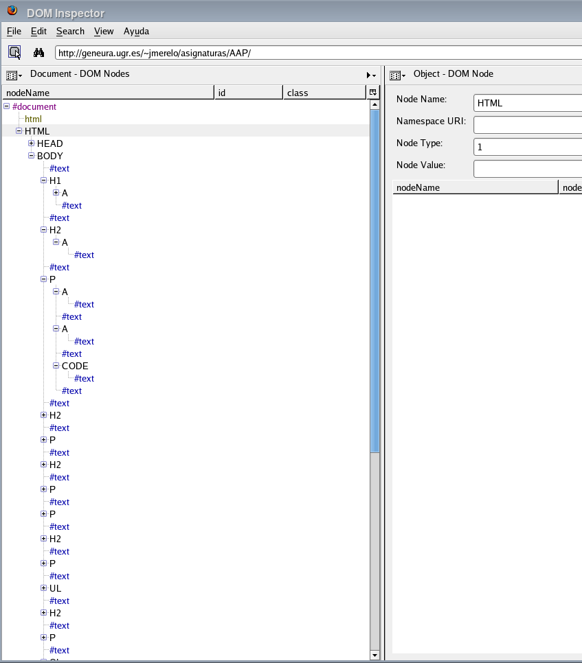
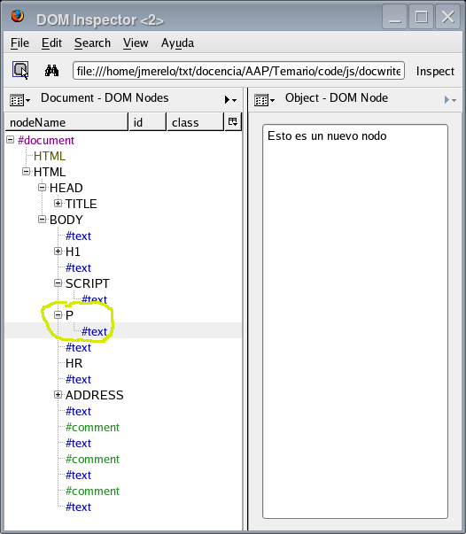

Fuera de ser solamente un lenguaje para el navegador, JavaScript tiene una ventaja frente a otros lenguajes de programación Está en todas partes. No hay ordenador sin navegador, ni hay navegador sin JavaScript. Se puede ejecutar hasta en el navegador Opera que viene con la Wii; desde la madurez de node.js, es el único lenguaje que permite ejecutar aplicaciones en cliente y servidor, así que se ha convertido en uno de los lenguajes más útiles para desarrollo en Internet.
Esto se debe, en parte a que ha sido definido como un estándar ECMA (denominado ECMAScript) lo que da lugar a muchas implementaciones diferentes, que son, además, independientes del fabricante. Y, por otro lado, también suele usar un conjunto de objetos estándar (que no son estrictamente parte de un lenguaje) que se pueden usar para añadir funcionalidad a una aplicación. Muchas aplicaciones complejas, como GMail o Google Apps dependen de estos objetos para crear aplicaciones en la web que se comporten como si se ejecutaran en un sistema operativo nativo; a estas aplicaciones se les ha denominado últimamente Rich Internet Applications.
Además, a diferencia de otros lenguajes, es muy fácil crear una aplicación distribuida o cliente/servidor con JavaScript. Tanto por su integración con el navegador (parte inseparable de la web, una arquitectura cliente-servidor) como por los objetos que suele tener el mismo, crear una aplicación cliente-servidor es casi trivial y ha dado lugar a un estilo de programación denominado AJAX, que se verá más adelante.
Para ejecutar JavaScript no hace falta más que un navegador, pero también hay entornos para trabajar con él de forma autónoma, tal como el Mozilla SpiderMonkey y el Rhino, éste último basado en Java; hay una lista de intérpretes completa que se puede usar. Conviene instalar alguno de ellos para poder ejecutar los programas de ejemplo; por ejemplo, para instalar el primero habrá que ejecutar (desde la consola de administrador o superusuario):
(que no funcionará en las últimas versiones de ubuntu, como la 14.04) o
o
que instalará Spidermonkey en el fichero js24
Hay algunas diferencias entre los intérpretes, sobre todo en
cualquier función que tenga que ver con la entrada/salida. Conviene
consultar la página de manual del intérprete para ver cómo se hace
específicamente en cada caso; en general, los ejemplos que se
incluyen aquí funcionan correctamente en js
o rhino.
En cuanto a los navegadores, puede que haga falta activar JavaScript para que lo entiendan. Por ejemplo, en Firefox hay que activarlo usando Edit -> Preferencias -> Contenido -> Activar JavaScript. Normalmente está activado por omisión. Por otro lado, veremos ejemplos principalmente de programas que se pueden usar desde el intérprete, y merece la pena instalarse uno.
emacs va de lujo. NetBeans
tiene
también soporte
para JavaScript, simplemente seleccionando este lenguaje para
un nuevo fichero. El editor detecta la estructura del
fichero e incluso analiza el código indicando los problemas,
indentando automáticamente y emparejando paréntesis y llaves. En realidad, esa integración con el navegador puede que haya estorbado a la aceptación de JS como un lenguaje decente; tampoco ha ayudado que la mayoría de las librerías que se hayan desarrollado estén relacionadas precisamente con la Web, y no tenga una librería decente para, pongamos por caso, acceder a bases de datos. Pero también ha permitido que el lenguaje siga siendo pequeño, y se haya desarrollado principalmente a base de añadir objetos y clases externas al mismo. En resumen, que en el marco de eso que se ha venido en llamar web 2.0 JS se ha convertido en adulto, y merece la pena estudiarlo como cualquier otro lenguaje.
Por último está el 1st JavaScript Editor, que es de pago, pero pueden conseguirse versiones de evaluación gratuitas.
Por lo que he probado, SpiderMonkey, Rhino y
KJSCMD se instalan fácilmente en Ubuntu; no hay más que hacer
aptitude search javascript (en ubuntu) y salen esos y alguno más. Fedora
Core es un poco más rácano en cuanto a entornos: aunque los
puedes instalar bajándote los fuentes y compilando, el que está
disponible en los repositorios es uno llamado sólo js,
aparentemente el SpiderMonkey. Para instalarlo, escribir yum install js. El Gnome Shell
(incluido en la versión 3.0 de Gnome) incluye también un
intérprete de JavaScript como lenguaje nativo, y con él se
pueden desarrollar pequeños applets. Este intérprete, que está
instalado por defecto junto con el entorno, se denomina gjs,
está basado en SpiderMonkey y tiene la ventaja de que está
integrado con todas las librerías de Gnome, de forma que se
pueden hacer programas tales
como este,
que crea una ventana con un botón
sin necesidad de instalar ningún módulo adicional. Éste
intérprete es el que usa desde lg (looking glass), una
consola de depuración de Gnome al estilo de la consola del
navegador que se puede ejecutar desde entorno pulsando Alt-F2 y
escribiendo lg. Finalmente, Windows incluye un programa de
línea de órdenes denominado cscript y wscript que, una vez más, tiene
ciertas diferencias con respecto al resto de los intérpretes
(todo lo relacionado con I/O); en realidad se trata de JScript,
otra implementación del estándar ECMAscript.
También se puede instalar como cliente y servidor JavaScript node.js, un procesador de bucles de eventos que es también intérprete en JavaScript. Y mucho más...
#!/usr/bin/js
print( 'Hola, Mundo' );
En realidad, el JS es bastante parecido al C, y, para el caso,
también al Java. Este programa producirá (siempre que lo hagamos
ejecutable con chmod +x hola.js previamente):
jmerelo@vega:~/txt/docencia/AAP/Temario$ ./hola.js
Hola, Mundo
Podemos probar con diferentes intérpretes que tengamos instalados.
jmerelo@penny:~/code$ gjs hola.js
Hola, Mundo
jmerelo@penny:~/code$ rhino hola.js
Hola, Mundo
jmerelo@penny:~/code$ js hola.js
Hola, Mundo
Ojo: en node.js habría que
cambiar print por console.log, o tendremos
un error. Con kjs habrá que ejecutarlo también
directamente desde la línea de órdenes; con un fichero da un error
y no he encontrado ningún manual específico sobre él, así que no
aconsejo usar esa versión de JS. Por
otro lado, este
programa, hola-g.js, sería equivalente para el
intérprete gjs que viene con Gnome.
Para ejecutarlo desde el navegador habrá que hacer una poca más de historia, pero tampoco tanto. Lo vemos en este ejemplo (darle a ver fuente para ver el código) donde se incluye el programa en JS de esta forma:
<script type='text/javascript' src='hola.js'></script>
El problema es que, en este caso, la orden print se
interpreta como impresión por impresora, y habrá que cambiarla
por otra que signifique lo mismo, escribir en el dispositivo de
salida que se esté usando:
document.writeln('Hola, Mundo')
Lo que también se puede escribir directamente así:
<script type='text/javascript'>document.writeln('Hola, Mundo')</script>
Estos programas se pueden usar con cualquier editor de texto, Emacs, Sublime Text o Notepad++; también con los entornos integrados, que te ofrecerán ventajas adicionales como completar las variables y los nombres de los comandos.
Vistas ya las mil y una formas de escribir cosas en la pantalla, procedamos a temas más escabrosos, como lo que viene siendo hacer algo realmente. Por ejemplo, un bucle que cree una tabla HTML, como se hace en el siguiente programilla:
var tabla="table";
var celda="td";
var fila="tr";
var matriz = [1,2,3];
print( "<"+tabla+">");
for (i in matriz ) {
print( "<"+fila+">");
for ( j in matriz ) {
print ("<"+celda+">"+matriz[i]*matriz[j]+"</"+celda+">");
}
print ("</"+fila+">\n");
}
print ("</"+tabla+">");
Este programa tiene dos bucles anidados, que imprimen un producto dentro de una tabla. La salida será tal que así (ver el fuente para la estructura):
| 1 | 2 | 3 |
| 2 | 4 | 6 |
| 3 | 6 | 9 |
El programa es menos complicado de lo que parece. Para declarar
variables en JS se usa el genérico var, aunque
también se pueden declarar tipos específicos. Para no pillarnos
los dedos, usamos var. En realidad, tampoco hace falta:
simplemente usando una variable aparece mágicamente. Con las
matrices ocurre igual (es decir, se declaran y se les asigna
valor directamente) : matriz lo es, y simplemente
se declaran sus valores entre corchetes. Ojo con los nombres de
variables, que a diferencia de otros lenguajes, distinguen
entre mayúsculas y minúsculas. esta_variable es
diferente de esta_Variable.
JS puede usar un tipo de bucle que tienen la apariencia habitual
(en lenguajes derivados del C), y se pueden usar igual
que en C, pero haremos un bucle que recorra la matriz, usando un
iterador i, que en este caso se comporta como una variable
de bucle de las de toda la vida. Usamos el + para
concatenación de cadenas, y poco más. El resto es como el C, o
el Java. De hecho, se pueden usar los bucles clásicos con
comparación e incremento, como se muestra en tabla1.js:
for (i=1; i<=3; i++ ) {
print( "<"+fila+">");
for ( j=1; j<=3; j++ ) {
print ("<"+celda+">"+i*j+"</"+celda+">");
}
print ("</"+fila+">\n");
}
Aunque queda un poco torpe tanto <>... vamos a reducir un poco el programa, haciéndolo más elegante (aunque más largo: no se puede tener todo):
var matriz = [1,2,3];
print( marca('table'));
for (i in matriz ) {
print( marca( 'tr' ));
for ( j in matriz ) {
print ( celda(matriz[i]*matriz[j]));
}
print ( finmarca('tr'));
}
print (finmarca('table'));
function marca( m ) {
return "<"+m+">";
}
function finmarca( m ) {
return "</"+m+">";
}
function celda( contenido ) {
return marca("td")+contenido+finmarca("td");
}
La principal diferencia con respecto al anterior es el uso de
funciones. Las funciones en JS tienen una estructura bastante
clásica: function nombre-de-función (param1, param2...). Una
vez más, se nota que JS no e un lenguaje con tipos fuertes,
pudiendo pasar los parámetros sin tipo, y adaptándose dentro de
la función al tipo necesario. Se pasan por valor, es decir,
que las modificaciones al parámetro formal no se trasladan a la
variable que se use. Además, se pueden declarar donde a
uno le dé la gana. Para llamarlas tampoco hay que hacer nada
especial, se usa el clásico paréntesis. La salida es exactamente
la misma que antes. El también clásico return devuelve un valor.
El ámbito de las variables es el bloque donde aparecen o se declaran, pero hay que tener en cuenta que, a efectos de JS, una página web es un programa. Se pueden declarar variables en la cabecera del documento HTML, y estarán accesibles en cualquier otro sitio, siempre que esté mas adelante en el documento. También habrá que tener en cuenta, en caso de que esté incluido en una página web, que aunque la declaración de una subrutina afecte a todo el programa, puede que esa parte de la página no se haya cargado todavía, con lo que no estará disponible. Una vez más, la programación distribuida no es totalmente igual a la programación en otros lenguajes.
JavaScript es un lenguaje basado en objetos, aunque un tanto peculiar; en realidad, de casi todas las características de un lenguaje orientado a objetos, solo tiene los objetos, e incluso estos son un tanto peculiares. Por eso no es exactamente dirigido a objetos u orientado a objetos. Las características las veremos en el siguiente programa, que podría servir para hacer quinielas.
var equipos= new Array('Madrid', 'Barça', 'Atleti', 'Geta', 'Betis', 'Depor', 'Sevilla', 'Graná');
// Definición de la clase Partido
function Partido(local,visitante) {
this.local = local;
this.visitante=visitante;
this.resultado=null;
}
var midsize = equipos.length/2;
var quiniela = new Array( midsize );
for ( i=0; i < midsize ; i++ ) {
var equipo1 = equipos.splice(Math.floor( equipos.length*Math.random()) , 1);
var equipo2 = equipos.splice(Math.floor( equipos.length*Math.random()), 1);
quiniela[i] = new Partido( equipo1, equipo2 );
}
for ( i in quiniela ) {
print( "Partido " + (parseInt(i)+1)+": " + quiniela[i].local + " - " + quiniela[i].visitante);
}
Con lo primero que nos enfrentamos es con una nueva forma de
definir una matriz o Array: ya que sabemos que JS es OO, pues
usamos una forma OO de definirlo, mediante la orden new, que,
como en Java y en C++, crea un nuevo objeto llamando al
constructor del mismo. En este caso le pasamos directamente
los elementos que constituyen el vector o array, pero
podríamos haberle pasado el tamaño de esta forma:
var myArray = new Array(33);
Los objetos así creados son objetos de pleno derecho, y se puede
acceder a sus propiedades con métodos usando también una
sintaxis clásica: el puntito . tras el nombre de la
variable. Por ejemplo, myArray.length devolvería el tamaño de
la matriz
Pero como lo que se trata en este programa es de definir nosotros
una clase, lo hacemos en las líneas siguientes, en la función
Partido, que convencionalmente ponemos en mayúscula, para
indicar que es un nombre de clase. En realidad, una clase en
JS es una función dentro de la cual se le asigna un valor a la
variable this, como en esta: cada uno de los elementos de la
variable this será una variable de instancia. Como se ve, aquí
no hay encapsulación ni perrito que le ladre.
Lo que vamos a crear es un vector de estos partidos, e irle
asignando valores extraídos aleatoriamente. Mientras tanto,
usamos los métodos que llevan objetos de clases estándar JS;
igual que otros lenguajes tienen librería estándar, JS tiene
clases estándar: Array, que ya hemos visto, y Math. Lo que
usamos de Math son métodos de clase, no de instancia, tales
como Math.random, que genera un número aleatorio entre 0 y
1. También se usa un método de instancia, splice, que extrae
una parte del vector de equipos; extraemos el seleccionado, para
que no moleste mientras generamos el resto de la quiniela.
Y el objeto lo creamos mediante una clásica llamada:
quiniela[i] = new Partido( equipo1, equipo2 );
Más adelante usamos un bucle in para escribir los valores de cada
uno de los partidos; las variables no están encapsuladas, así
que se puede acceder a ellas directamente: partido.local, por
ejemplo. Hay también un pequeño truco: el uso de parseInt
dentro de print para que se interprete i como un número
entero, no como una cadena, y, por tanto, el + que lo sigue
como una suma normal y no una concatenación de cadenas. i+1
daría 11, mientras que parseInt(i)+1 dará 2.
Y el resultado, aleatorio por supuesto, será algo así
como esto :
Partido 0: Graná - Atleti
Partido 1: Madrid - Depor
Partido 2: Betis - Barça
Partido 3: Sevilla - Geta
Añadir métodos de clase se hace más o menos de la misma forma, que no es muy ortodoxa, pero es la que hay. Lo veremos en el siguiente programa, del que sacamos el fragmento más interesante:
// Definición de la clase Partido
function Partido(local,visitante) {
this.local = local;
this.visitante=visitante;
this.resultado=null;
this.setResultado = setResultado;
this.toString = toString;
}
function setResultado( esteResultado ) {
if ( esteResultado == '1' || esteResultado=='x' || esteResultado=='2' )
this.resultado = esteResultado;
}
function toString() {
return "Partido " + i + ": " + this.local + " - " + this.visitante + " = "+ this.resultado;
}
Añadimos un par de funciones, y para que pertenezcan a la clase,
hala, con un this por aquí y un this por allá,
solucionado. Es de buen gusto llamar al método con el mismo
nombre que la función, para no despistarse; también seguir una
cierta convención para ponerles nombres: get, o to, o cosas
por el estilo. Lo que no es de recibo es llamar a una función
que cambia el valor de la variable igual que la variable, porque
entonces nos liamos. Y como ya hemos visto antes como se llama a
los métodos de instancia, pues listos. No se hable más.
Pero hay más matrices, aparte de las lineales: JS, como muchos otros lenguajes, permite trabajar con matrices asociativas (también llamadas diccionarios o hashes). En una matriz asociativa, la clave es una cadena, en vez de un número, lo que le da mucha más flexibilidad a la hora de almacenar información. En un vector, se accede a cada uno de los elementos del vector a través de un índice numérico, y eso implica también un orden en su estructura (y, a veces, una continuidad en su almacenamiento, aunque no necesariamente tiene que ser así). Es decir, un vector lineal es un grupo de parejas (0, valor[0], 1, valor[1],...., n, valor[n]). De hecho, como los números suelen ser sucesivos, muchas veces se dan por sobreentendidos, de forma que para trabajar con un vector (ejecutar una operación sobre sus valores, por ejemplo) sólo se usan sus valores: valor[0], valor[1],..., valor[n].
Sin embargo, una matriz asociativa, diccionario, mapa o Tabla_hash
(o simplemente hash) está compuesto por una serie de pares
(cadena alfanumérica, valor): (cadena1, valor1,
cadena2,valor2... cadenan,
valorn). Los valores están asociados a su cadena
correspondiente; de forma que se accede a los valores
a través de la cadena alfanumérica usada para indexarlos, que
se suele denominar clave (key). Casi todos los lenguajes
de programación tienen alguna forma de usar estas matrices
asociativas. Por ejemplo, en Perl:
my %matrizAsociativa; # % para matrices asociativas
$matrizAsociativa{'variable'}='Valor'; # { para las claves
print $matrizAsociativa{'variable'};
devolvería Valor.
Las usaremos en el siguiente programa, que genera aleatoriamente diez jornadas de una liga, y asigna puntuación según los resultados:
load('Partido.js');
var equipos= new Array('Madrid', 'Barça', 'Atleti', 'Geta', 'Betis', 'Depor', 'Sevilla', 'Graná');
function jornada( estosEquipos ) {
var equiposAqui = new Array;
equiposAqui = equiposAqui.concat(estosEquipos);
var midsize = equiposAqui.length/2;
var quiniela = new Array( midsize );
var unox2 = new Array( '1','x','2');
for ( var i=0; i < midsize ; i++ ) {
var equipo1 = equiposAqui.splice(Math.floor( equiposAqui.length*Math.random()) , 1);
var equipo2 = equiposAqui.splice(Math.floor( equiposAqui.length*Math.random()), 1);
quiniela[i] = new Partido( equipo1, equipo2 );
quiniela[i].setResultado( unox2[Math.floor( 3*Math.random()) ]);
}
return quiniela;
}
var quinielas = new Array;
for ( var i = 0; i < 10; i ++ ) {
quinielas[i] = jornada( equipos );
}
var resultados= new Array;
for ( var i in equipos ) {
resultados[equipos[i]]=0;
}
for ( var i = 0; i < quinielas.length; i ++ ) {
for ( var j = 0;j < quinielas[i].length; j ++ ) {
var local = quinielas[i][j].local;
var visitante = quinielas[i][j].visitante;
var resultado = quinielas[i][j].resultado;
if ( resultado == 1 ) {
resultados[local]+=3;
} else if ( resultado == 'x' ) {
resultados[local]+=1;
resultados[visitante]+=1;
} else { // resultado == 2
resultados[visitante]+=3
}
}
}
for ( var i in resultados ) {
print( i + ": " + resultados[i])
}
En parte, este programa es similar a los anteriores: la parte que
generaba cada jornada está ahora en una función, que devuelve un
array de resultados, que se guardan en el array
quinielas. Hemos sacado, además, la definición de la clase
Partido a un fichero externo, que cargamos con load. Por
otro lado, como a la función jornada se le pasa una referencia
al vector con los equipos, tenemos que copiarlo a una variable
local, definiéndola (equiposAqui), y concatenándole (concat)
el vector que se le pasa por valor, que es igual que copiarlo,
pero seo hace en una sola orden.
El truco está a partir de la definición de la
variable resultados. Esta variable es una matriz asociativa
que contendrá la puntuación de los equipos, y estará indexada
por el nombre del equipo. Se declara igual que los demás arrays,
y, para inicializarlo, vamos extrayendo los valores del vector
de equipos, y usándolos como clave:
resultados[equipos[i]]=0;
equipos[i] valdrá sucesivamente Barça, Graná... y así se irán
inicializando a 0 los valores correspondientes. Si no se
inicializan, la primera vez que se usa una variable tiene el
valor NaN, con el que no se puede hacer nada. Es así de
arisco.
Más adelante se va recorriendo en un bucle doble los partidos de
cada una de las jornadas, y asignando puntuación dependiendo del
resultado de la quiniela. Se usa la construcción if... else if
... else, que funciona de la forma habitual, aunque también
podríamos haber usado switch, como en el siguiente programa, que en lo
único que cambia es en estas líneas:
switch (resultado) {
case '1':
resultados[local]+=3;
break;
case 'x':
resultados[local]+=1;
resultados[visitante]+=1;
break;
default:
resultados[visitante]+=3;
}
}
y que viene a ser como el anterior, pero con cases en vez de
ifs. Vamos, tres cuartos de lo mismo.
En realidad, todo en JavaScript es un objeto, y especialmente los
vectores: tanto los vectores tradicionales como las matrices
asociativas como los objetos se representan internamente de la
misma forma, y te puedes referir a ellos de diferentes
maneras. Vamos a usar el depurador interactivo para verlo,
ejecutando simplemente rhino, rhino o kjs en la línea de
comandos. Una vez hecho, tecleamos las siguientes órdenes:
js> foo = new Array
js> foo.cero='Cero'
Cero
js> foo[1] = 'Uno'
Uno
js> foo['dos'] = 'Dos'
Dos
js> foo.dos
Dos
js> foo['cero']
Cero
js> for ( i in foo) { print(foo[i]);}
Cero
Uno
Dos
Hay que teclear lo que se encuentra detrás de js>; cada segunda
línea es la respuesta del intérprete a nuestras órdenes. En la
primera, creamos un vector, y le asignamos valor a tres
elementos de formas diferentes: usando la notación de objeto
(con el .) para el 0, la notación de vector para el 1, y la
notación de matriz asociativa para el 2. Luego se ve que,
independientemente de cómo se haya asignado el valor, se puede
usar cualquier otra notación para acceder al elemento; y,
finalmente, vemos como se puede recorrer de forma uniforme el
array usando sus componentes mediante la orden in.
Por eso precisamente, hay que tener un poco de cuidado con estos
arrays asociativos que se comportan un poco como les da la
gana. Es conveniente usar para ellos Object, que es lo que
son, en vez de Array. De hecho, si en lo anterior sustituimos
Array por Object dará exactamente el mismo resultado. Por
eso se consideran perniciosas los arrays asociativos en JS, pero es simplemente una cuestión de convención.
No todo va a ser público en un objeto; también pueden tener su intimidad guardada en variables privadas:
js> function Foo( bar ) { this.bar = bar; var privada = 7;}
js> var este_foo = new Foo( 'correquetepillo' );
js> print(este_foo.bar)
correquetepillo
js> print(este_foo.privada)
undefined
Es tan secreta, de hecho, que ni siquiera te dice que no existe: simplemente que su valor está indefinido.
El propio estándar JavaScript (ECMAScript) define una serie de
clases que se pueden instanciar, que corresponderían a la
librería estándar (o librería estándar de clases) en otros
lenguajes. Una de ellas ya la hemos visto: la clase
Array. Otra es la clase String, que se usa para manejar
cadenas alfanuméricas, chorros de 0s y 1s.
js> var cadena = new String("1");
js> print(cadena + 1)
11
La clase String tiene una serie de métodos que permiten hacer lo
habitual con las cadenas: encadenarlas, dividirlas, y buscar
cosas.
js> var nombres = "Pedro, Lucas, Juan".split(", ");
js> print(nombres[0])
Pedro
En este caso, split es un método de la clase String, y lo estamos
aplicando directamente sobre la cadena "Pedro, Lucas, Juan",
que, de por si, es un objeto de esa clase. split divide la
cadena usando los caracteres que le pasamos, y da lugar a un
Array con tantos componentes como resulte.
De camino, podría haber una clase para escribir y leer ficheros, porque con el rato que llevamos, todavía no hemos visto ninguna, y, además, cualquier lenguaje decente escribe y lee ficheros. Es más, es que muchos no hacen otra cosa, ¿no? Pues no. El estándar JS no define ningún tipo de rutina de E/S. Pero si usamos el intérprete Rhino (en vez de SpiderMonkey, que es el que hemos venido usando), podemos usar clases de Java directamente, lo que complica terriblemente el programa, pero ahí está, de todas formas:
// ejecutar con rhino lee_quiniela.js <argumento>
load('Partido.js');
var FileReader = java.io.FileReader;
var BufferedReader =java.io.BufferedReader;
var file_name = arguments[0];
var f = new FileReader(file_name);
var br = new BufferedReader( f );
var resultados= new Array;
var line = new String;
while ((line = br.readLine()) != null) {
var estaLinea = new String( line );
var resultado = estaLinea.split(" ");
switch (resultado[2]) {
case '1':
if ( resultados[resultado[0]] ) {
resultados[resultado[0]]+=3;
} else {
resultados[resultado[0]]=3;
}
break;
case 'x':
if ( resultados[resultado[0]] ) {
resultados[resultado[0]]+=1;
} else {
resultados[resultado[0]]=1;
}
if ( resultados[resultado[1]] ) {
resultados[resultado[1]]+=1;
} else {
resultados[resultado[1]]=1;
}
break;
default:
if ( resultados[resultado[1]] ) {
resultados[resultado[1]]+=3;
} else {
resultados[resultado[1]]=3;
}
break
}
}
for ( var i in resultados ) {
print( i + ": " + resultados[i])
}
El programa es bastante similar al anterior, pero lee de fichero en
vez de generar los resultados aleatoriamente. Y lo lee
aproximadamente de la misma forma a como se haría en Java. Por
eso hay que usar Rhino, que permite usar las clases de la
librería estándar de Java de forma nativa. En este caso
usamos dos clases: FileReader y BufferedReader, para poder
leer de línea en línea. La única diferencia a como se haría en
Java es que hay que pasar la línea leída de un objeto String
de Java a un objeto String de JS, que es lo que se hace en
var estaLinea = new String( line );. También sale un poco más
largo porque, como indicamos en el programa de más arriba, los
elementos de un Array hay que inicializarlos; en cada caso del
switch comprobamos si están inicializados o no antes de
sumarles; si no lo está, le asignamos el valor
directamente.
En realidad, las primeras líneas lo único que hacen es declarar un alias para las clases de Java. En JS una variable puede contener cualquier cosa, incluso una clase. Así acortamos el nombre, y parecen más de javascrí.
La otra diferencia es también cómo se ejecuta el fichero:
rhino lee_quiniela.js quiniela.datos
para ejecutarlo sobre el fichero
quiniela.datos, que dará el resultado siguiente:
Elche: 1
Atleti: 3
Cai: 1
Athleti: 6
Bar~a: 1
Madrid: 2
H~rcules: 1
Queda con esto más o menos claro que para ir donde nadie ha ido antes
con JS, hay que meterse un poco en Java. Pero no siempre. Tenéis
alguna información más
en este
tutorial de Mozilla, que te explica como importar espacios de
nombres completos e incluso como implementar interfaces de Java.
Aunque no lo parezca, JS es todavía un lenguaje joven, al que le faltan gran cantidad de librerías básicas, y, especialmente, una forma centralizada de empaquetar, probar y distribuir esas librerías, como CPAN para Perl o GEMs para Ruby. Hay algo por el estilo, llamado OpenJSAN, de JS Archive Network. Para instalarlo hace falta Perl, y sólo hay unas pocas librerías todavía. Algunas muy útiles, pero siguen siendo unas pocas. Otras, como la amplia JSlib, sólo va en Windows. En todo caso, a estas alturas parece un proyecto muerto.
La que si es popular es Prototype, una librería
que se usa principalmente en conjunción con RoR y AJAX, pero
resulta que necesita ejecutarse dentro del navegador, porque usa
objetos del mismo (como document, por ejemplo). Así que la
dejaremos para más adelante.
Lo interesante de los objetos en JS es que hay una forma muy fácil de serializarlos (es decir, convertirlos en texto u otro formato de forma que se puedan intercambiar fácilmente con otros programas a través de la red); a este formato se le denomina JSON (JavaScript Object Notation). Y como en realidad, tal como se ha visto en el apartado anterior, todo es un objeto en JS, se puede usar esta notación para asignar valores prácticamente a cualquier cosa. Vamos a usar una vez más el intérprete en modo interactivo para ver un ejemplo:
js> var objeto = { Madrid : 25, Atleti: 33, Ponferradina: 44 };
js> for (i in objeto) { print( i + " : "+ objeto[i] )};
Madrid : 25
Atleti : 33
Ponferradina : 44
Más fácil no puede ser. Se le asigna valor a un objeto con el formato clave : valor (con coma al final), de la misma forma que se haría a un array asociativo. Además, se pueden crear objetos sobre la marcha y asignárselos a una variable cuyo valor se cree también sobre la marcha:
js> eval("var objeto2 = { Madrid : 25, Atleti: 33, Ponferradina: 44 }");
js> for (i in objeto2) { print( i + " : "+ objeto[i] )};
Madrid : 25
Atleti : 33
Ponferradina : 44
donde usamos eval, que interpreta una expresión en JavaScript como
si del propio intérprete se tratara. Las expresiones se pueden
anidar, para dar lugar a objetos más complejos
js> eval("var objeto2 = { Madrid : 25, Atleti: 33, Ponferradina: { casa: 33, fuera: 44} }");
js> for (i in objeto2) { print( i + " : "+ objeto2[i] )};
Madrid : 25
Atleti : 33
Ponferradina : [object Object]
Que parece más raro de la cuenta, pero que, con un poco de código, se podría también imprimir.
Y JSON, precisamente, es uno de los formatos de intercambio, el más
simple, el que se usa en AJAX, y un modo de acceder también a
servicios web como geonames. Lo hacemos en el
siguiente ejemplo: json-geonames.html, del que extraemos
el código en JS (fichero geonames_call.js)
// this function will be called by our JSON callback
// the parameter jData will contain an array with geonames objects
function getLocation(jData) {
if (jData == null) {
// There was a problem parsing search results
return;
}
var html = '<ul>';
var geonames = jData.geonames;
for (i=0;i< geonames.length;i++) {
var name = geonames[i];
// we create a simple html list with the geonames objects
// the link will call the center() javascript method with lat/lng as parameter
html = html+"<li><em>"+name.name+ "</em> - Latitud: " + name.lat +', longitud: ' + name.lng+ "</li>";
}
html+="</ul>";
document.getElementById('resultDiv').innerHTML = html;
}
// calls the geonames JSON webservice with the search term
function search() {
request = 'http://ws.geonames.org/searchJSON?country=ES&q=' + encodeURIComponent(document.getElementById('q').value) + '&maxRows=10&callback=getLocation';
// Create a new script object
// Implementación en jsr_class.js
aObj = new JSONscriptRequest(request);
// Build the script tag
aObj.buildScriptTag();
// Execute (add) the script tag
aObj.addScriptTag();
}
Este ejemplo es un poco complicado, sobre todo, por el mecanismo
que usa para hacer la llamada, y que está contenido en el
fichero jsr_class.js, que
contiene la clase JSONscriptRequest, que será la que
usemos para construir la llamada. La mecánica es la siguiente:
cada vez que se introduce un nombre de un pueblo o ciudad de
España, se genera un evento, y se llama a la función
search. Esta función construye una petición, dentro de la
cual está incluido callback=getLocation. El truco
es que esa petición genera un callback tal que cuando se
recibe la respuesta se llama a la función getLocation
(definida más arriba).
Esa función recibe como variable en jData el resultado que, al
estar en formato JSON, ya está, de hecho, en el formato de un
objeto en JS. Por eso, en el bucle dentro de la función
getLocation se trabaja directamente con los datos obtenidos
sin necesidad de hacer ningún tipo de parsing.
Las funciones son objetos de pleno derecho en JavaScript. Se puede crear una función como cualquier otro objeto, y de hecho ya hemos visto algo parecido cuando hemos definido una clase (que es simplemente un tipo de función). Como tales objetos, podemos pasarlas como parámetros y modificarlas de diferentes formas; algo así hemos visto ya cuando hemos definido objetos también, en los que se asignan los nombres de funciones a métodos de una clase simplemente usando su nombre (en realidad, un puntero a función). Las diferentes formas de definir funciones se explican en este post de StackOverflow (un recurso imprescindible, por otro lado).
Vamos a verlo a verlo a continuación, usando nuestra conocida quiniela; usaremos una función para imprimir el resultado de la quiniela, de forma que se pueda ver la salida de varias formas diferentes. En el siguiente módulo hacemos uso de esta funcionalidad:
// Definición de la clase Partido
function Nuevo_partido(local,visitante) {
this.local = local;
this.visitante=visitante;
this.resultado=null;
this.setResultado = setResultado;
this.toString = toString;
this.set_to_string = set_to_string;
this.impresor = _toString;
}
function setResultado( esteResultado ) {
if ( esteResultado == '1' || esteResultado=='x' || esteResultado=='2' )
this.resultado = esteResultado;
}
function toString() {
return this.impresor(this.local, this.visitante, this.resultado);
}
function _toString( local, visitante ) {
return ": " + local + " - " + visitante + " = "+ resultado;
}
function set_to_string ( impresor ) {
this.impresor = impresor;
}
En esta clase la principal diferencia es que usamos el método
impresor como una variable al cual le podemos asignar diferentes
valores, incluso desde fuera. De esta forma se puede modificar el
comportamiento de un objeto: asignamos un comportamiento por
omisión, pero si es necesario podemos cambiar desde fuera
el comportamiento de esa clase simplemente asignándole un valor
nuevo. De hecho, esto es lo que vamos a hacer en el programa
siguiente (liga3.js):
#!/usr/bin/js
load('Nuevo_partido.js');
var equipos= new Array('Madrid', 'Barça', 'Atleti', 'Geta', 'Betis', 'Depor', 'Sevilla', 'Graná');
function jornada( estosEquipos ) {
var equiposAqui = new Array;
var imprime = function( local, visitante, resultado ) {
print("Impimiendo \n");
return "- " + local + " vs. " + visitante + " resultado "+ resultado;
};
equiposAqui = equiposAqui.concat(estosEquipos);
var midsize = equiposAqui.length/2;
var quiniela = new Array( midsize );
var unox2 = new Array( '1','x','2');
for ( var i=0; i < midsize ; i++ ) {
var equipo1 = equiposAqui.splice(Math.floor( equiposAqui.length*Math.random()) , 1);
var equipo2 = equiposAqui.splice(Math.floor( equiposAqui.length*Math.random()), 1);
quiniela[i] = new Nuevo_partido( equipo1, equipo2 );
quiniela[i].setResultado( unox2[Math.floor( 3*Math.random()) ]);
quiniela[i].set_to_string( imprime );
}
return quiniela;
}
var quinielas = new Array;
for ( var i = 0; i < 10; i ++ ) {
quinielas[i] = jornada( equipos );
}
var resultados= new Array;
for ( var i in equipos ) {
resultados[equipos[i]]=0;
}
for ( var i = 0; i < quinielas.length; i ++ ) {
for ( var j = 0;j < quinielas[i].length; j ++ ) {
var local = quinielas[i][j].local;
var visitante = quinielas[i][j].visitante;
var resultado = quinielas[i][j].resultado;
switch (resultado) {
case '1':
resultados[local]+=3;
break;
case 'x':
resultados[local]+=1;
resultados[visitante]+=1;
break;
default:
resultados[visitante]+=3;
}
}
}
for ( var i in resultados ) {
print( i + ": " + resultados[i])
}
Como en todos los scripts, habrá que tener en cuenta que la primera
línea, #!/usr/bin/js, tendrá que sustituirse por el
intérprete de JavaScript que usemos
(rhino, gjs, node o el que
sea; en este último caso es probable que la línea
sea /usr/bin/local/node). La parte nueva de este programa está en en la línea 9, donde se
define la variable imprime. Se define una función sin
nombre (lo que se suele denominar un closure o
función anónima) a la que podemos acceder mediante la variable que
le hemos asignado. Lo importante de esta sintaxis es que las
funciones son variables de pleno derecho, que podemos usar como
parámetros de otras funciones; esto se usará de forma extensiva
cuando veamos jQuery y node.js.
Uno de los problemas de JS es que, al haber sido desarrollado principalmente para trabajar en el navegador, carece de una serie de librerías comunes para trabajar en el servidor o en aplicaciones de escritorio. CommonJS es un intento de dar tal infraestructura. Principalmente se trata de proveer una serie de especificaciones para hacer cosas comunes, desde o más simple, que es crear un módulo o librería hasta cosas más complejas: interacción con consola o con línea de órdenes.
Por lo pronto la especificación que ha tenido más éxito es la de módulos, que se resume en este artículo; se trata de que un módulo escrito para un intérprete (Rhino, por ejemplo) pueda funcionar en otro (tal como node.js). Vamos a ver cómo adaptaríamos alguna de las cosas hechas a este estándar, por ejemplo, cambiando esto sobre la clase Nuevo_partido.js creada anteriormente (la llamamos Un_Partido).
exports.Un_Partido = function (local,visitante,resultado) {
this.local = local;
this.visitante=visitante;
this.resultado=resultado;
this.setResultado = setResultado;
this.toString = toString;
this.set_to_string = set_to_string;
this.impresor = _toString;
}
El único cambio ha sido que en vez de definir la función
directamente, se define como un atributo de exports. El resto, al
ser atributos de ese objeto, no hace falta que lo definamos de la
misma forma. Al llamarlo también habrá un pequeño cambio. Mientras
que antes teníamos que hacer un eval sobre lo cargado, ahora basta
con (programa
usa_partido.js):
var un_partido = require('./Un_Partido.js');
var este_partido = new un_partido.Un_Partido( 'este','otro','1');
console.log('Resultado ' + este_partido.toString());
Este módulo ya se comporta como el resto de los módulos de Node,
haciendo falta usar sólo require (con el camino completo) para
cargarlo. Ahora, con require lo que definimos es un objeto, y las
funciones son atributos de ese objeto; por lo que a la hora de
declarar nuevos objetos de esa clase tendremos que hacerlo
con new un_partido.Un_Partido. A partir de ahí el
objeto generado se comporta exactamente igual que cualquier otro
objeto, como podemos ver usando console.
A diferencia de casi todos los lenguajes de scripting, no hay un modo estándar de instalar módulos JavaScript, aunque algunos intérpretes (notablemente Node.js, del que hablaremos luego) sí lo tienen. De hecho, ni siquiera common.js es universal, existiendo otras convenciones que le hacen la competencia tales como require.js. La principal ventaja de common.js es su aceptación por parte de node.js, precisamente y su uso en NPM, por eso cabe suponer que el resto empezarán, más o menos, a usarlo. En todo caso, son enfoques diferentes, uno se concentra en la forma de cargar el módulo mientras que otro se concentra en la forma de empaquetarlo.
Cualquiera de los recursos que listo ahí abajo pueden resultar útiles para ampliar información sobre JavaScript. Quizás también pueda ser interesante usar alguna librería que facilite su uso como Mochikit o Prototype. También el Google Web Toolkit permite desarrollar en AJAX programando sólo en Java, aunque pueda que el JS generado necesite algún retoque adicional.
Agradezco a los comentaristas de los diferentes anuncios que publiqué en Barrapunto sus comentarios y sugerencias. También a Javier Espigares por la lectura y comentarios sobre las versiones previas de este tema y el anterior.
Hay dos libros fundamentales para aprender JS, aunque están muy enfocados a JS en el navegador: JavaScript: The Definitive Guide, el libro del rinoceronte, editado por O'Reilly, que está disponible como recurso electrónico en la UGR y JavaScript Bible, de Danny Goodman, un tocho considerable, en el que hay de todo, y que viene con un útil CD con ejemplos. También está como recurso electrónico. Hay muchos más recursos, algunos de ellos disponibles de forma electrónica.
Como recursos adicionales, las páginas de JavaScript en Mozilla.org, el estándar completo, y el curso de JavaScript de Víctor Rivas Santos.
Ya no es tan difícil encontrar un enfoque como el de este curso, centrado en JS como lenguaje y no como un chisme más dentro del navegador. Eventualmente, habrá que tratar con esto, así que este momento es tan bueno como cualquier otro. En realidad, la mayor diferencia entre JS-sin-navegador y JS-con-navegador es el bagaje de objetos con el que tiene que trabajar y también el modelo que se va a usar para entrada y salida: la propia página en la que está inserto el programa.
En general, lo que hace un navegador es analizar el HTML que le envía el servidor y convertirlo en un árbol, el DOM o document object model. Todo lo que hay en el documento es una hoja o un nudo dentro de ese árbol. Lo importante es que los programas JS, aparte de ser hojas dentro de ese árbol, también actúan sobre ese árbol, añadiendo o quitando hojas, o simplemente alterando sus propiedades. El DOM está definido como un estándar del W3, pero eso no quita que haya problemas de compatibilidad entre los diferentes navegadores. Por ejemplo, Mozilla tiene su modelo de objetos, que usa en sus navegadores, los más bonitos del mundo mundial.
Para empezar, vamos a ver qué pinta tiene el DOM de un documento
cualquiera. Por ejemplo, usemos esta misma página, que para eso
está ya en HTML. En Firefox, se ve el DOM completo con la
combinación de teclas Ctrl+Shift+I. Para ésta página, saldría
algo así:

La estructura es la que cabe esperar: hay un nodo raíz, etiquetado
como document, del que descienden las dos partes del documento
HTML: HEAD y BODY. Y de ahí, pues el resto.
Todos las herramientas relacionadas con la página web, como el CSS,
trabajan y tienen en cuenta esta estructura DOM del documento. Y
cuando un programa JS se ejecuta dentro de un documento, puede
alterar su estructura. Veámoslo, por ejemplo, en el docwrite.html:
<!DOCTYPE HTML PUBLIC "-//W3C//DTD HTML 4.01 Transitional//EN">
<html>
<head>
<title>Prueba document.write</title>
<script type='application/javascript'>
function setColor( color ) {
document.getElementById('color').style.background =color;
}
</script>
</head>
<body>
<h1>Prueba document.write</h1>
<p><input type='text' name='color' value='Color (in inglis)' onChange='setColor(value)' /></p>
<div id='color'> </div>
<hr>
<address><a href="mailto:jmerelo@localhost.localdomain">Juan J. Merelo</a></address>
<!-- Created: Wed Feb 21 18:45:35 CET 2007 -->
<!-- hhmts start -->
Last modified: Sun Feb 25 18:57:52 CET 2007
<!-- hhmts end -->
</body>
</html>
que crearía un DOM con el aspecto siguiente:

Como se ve, el nodo P sigue al nodo script, es decir, que el nodo
se crea en el DOM justamente siguiendo al nodo que incluye el
script. En realidad, se crean tantos nodos como a uno le
interese, pero de esta forma sólo se pueden colocar en el sitio
donde está el script. Así que habrá que imaginar otra forma de
hacerlo.
Navegar por el modelo de objetos no es excesivamente complicado,
gracias a las funciones getElementsBy*, que escogen elementos
del DOM de acuerdo con alguna
característica. getElementsByTagName escoge elementos por el
nombre de la etiqueta, mientras que getElementById usa el
atributo id; nótese la diferencia entre Elements y
Element; en el primer caso se devuelve un Array y en el
segundo uno solo, porque la Id es única. Cuando se trabaja con
un documento, habrá que
usar de forma sabia los atributos y clases de forma que sea
fácil escoger y trabajar con los elementos de un tipo
determinado, o con un elemento en concreto. Por ejemplo,
getElementByTagName('h2') devolverá un array con
todos los elementos que tengan esa etiqueta, y
getElementById('ej.t1.3') devolverá el tercer
bloque de ejercicios de este tema, como veremos en el ejemplo
siguiente (que está incluido en la misma página):
Bloque
function putBloque(value) {
var ejs = document.getElementById('ej.T1.'+value);
document.getElementById('resultado1').innerHTML=ejs.textContent;
}
Un par de líneas sólo de JS: una para buscar el elemento (la
primera) y la segunda para extraer su contenido (textContent)
e introducirlo en otro, el elemento resultado1 que teníamos
preparado al efecto. innerHTML es el HTML interno de un
elemento: al asignarle un valor, efectivamente, sustituimos
parte del contenido de la página dinámicamente. ¿No es una
maravilla?
No se sabe porqué los temas de JS tienen tanta relación con los primates, pero el hecho es que GreaseMonkey (o TamperMonkey, su equivalente en Chrome, Chromium y Opera Next, que tiene una capa de compatibilidad que permite ejecutar estos scripts) es un plugin para los navegadores Mozilla que permite instalar en el navegador programillas JS específicos de una página o grupo de páginas. Para trabajar con él, lo primero que hay que hacer es instalarlo (Herramientas->Complementos en Firefox y Herramientas->Extensiones en Chrome y Chromium) y reiniciar el navegador.
Una vez hecho eso, Grease/TamperMonkey reconoce los scripts con la
extensión .user.js como propios (es decir, los abre
cuando se descargan desde una web o se abre el fichero), los instala, y
permite gestionarlos, activarlos, y desactivarlos, desde un
icono con un monito en la barra inferior del navegador. O sea,
que una vez que se vea el monito, podemos cargar este programa
(aap-nav.user.js) que lo usa:
// ==UserScript==
// @name AAP-Nav
// @namespace http://geneura.org/projects/greasemonkey
// @description Navegación por las secciones de AAP
// @include http://geneura.ugr.es/~jmerelo/asignaturas/*
// ==/UserScript==
GM_log('Entrando AAP-Nav');
var h2 = document.getElementsByTagName('h2');
var a_nodes = new Array;
var anchors = new Array;
for ( var secs = 0; secs < h2.length; secs ++ ) {
var thisA = h2[secs].getElementsByTagName('a');
a_nodes[secs] = thisA[0];
anchors[secs] = thisA[0].getAttribute('name');
GM_log('Anchor ' + secs + " " + anchors[secs]);
}
for ( var secs = 0; secs < h2.length; secs ++ ) {
var span = document.createElement('span');
span.setAttribute('style','background:lightblue');
if ( secs > 0 ) {
var ahref = document.createElement('a');
ahref.setAttribute('href','#'+anchors[secs-1]);
var txt=document.createTextNode('^');
ahref.appendChild(txt);
span.appendChild(ahref);
}
if ( secs < h2.length -1 ) {
span.appendChild(document.createTextNode(' | '));
var ahref = document.createElement('a');
ahref.setAttribute('href','#'+anchors[secs+1]);
var txt=document.createTextNode('v');
ahref.appendChild(txt);
span.appendChild(ahref);
}
a_nodes[secs].parentNode.insertBefore(span,a_nodes[secs]);
}
Este programa añade unas flechitas de navegación a una página que
incluya cabeceras h2 de forma que se pueda pasar de cada sección a
la anterior a la siguiente (de ahí lo de aap-nav). Tiene dos
partes: la primera parte halla las etiquetas de navegación, y la
segunda las inserta. Tres partes, de hecho, si incluimos las
declaraciones del principio, que son para uso y disfrute del
propio GreaseMonkey. Las dos primeras son terminológicas: cómo
se llama, y qué espacio de nombres usa. Esto es para distinguir
scripts con el mismo nombre de diferentes fuentes. La tercera,
una descripción, aparece en los directorios correspondientes y
cuando gestionamos los scripts.
El cuarto apartado es el más importante. Es un patrón de las páginas en las que va a funcionar el script. Éste no tendría sentido fuera de las páginas de la asignatura en la que estaban incluidos originalmente estos apuntes, así que incluimos en el mismo simplemente a las que hay en ese directorio. Cuando el navegador cargue alguna página con ese patrón, GM lo detectará y cargará el script; para que trabaje sobre otro conjunto de páginas habrá que poner el patrón correspondiente.
El programa en sí hace uso de los elementos explicados en la
sección anterior: extrae del documento los títulos de capítulo
(h2) y de ahí los anchor (a name) y sus
atributos, metiendo todo lo metible en un bucle. Hace falta
tenerlos todos en un array, por eso se usa un segundo bucle para
insertar en la página los elementos de navegación.
Este segundo bucle crea elementos a tutiplén, usando
createElement (para crear un elemento), setAttribute (para
poner su atributo) y createTextNode (para meter texto dentro
de los elementos). Luego, a modo de injerto, se van metiendo los
elementos unos dentro de otros usando appendChild. Y,
finalmente, se insertan los elementos creados en el documento en
la penúltima línea:
que navega desde el ancla hasta su padre (parentNode) e
inserta antes del mismo (insertBefore) el span que hemos
creado previamente. El resultado, si todo ha ido bien, deberías
verlo en este mismo tutorial.
Además, hace uso de algunas funciones propias de GM:
GM_log, que escribe en la consola de
JavaScript. Muy útil para depurarlo, inútil en producción; pero
si abres la consola de JS verás los mensajes que ha usado.
Para usarlo con TamperMonkey, hay que marcar las opciones de compatibilidad con GreaseMonkey y Firefox, aunque también trata de detectar las opciones necesarias automáticamente.
Una de las características específicas del DOM es la posibilidad de
trabajar con otras ventanas, creando contenido y presentándolo en
las mismas. Para eso se usa el objeto window; lo interesante de
este elemento eso que está incluido en el propio DOM, por lo que se
puede usar desde JavaScript como hacemos en el siguiente
programa. No es que sea aconsejable, por cierto; debe usarse sólo
en caso de que sea imprescindible (a veces se usa para
autenticación, por ejemplo, o para no crear elementos nuevos en el
interfaz). Por ejemplo, se hace así
en este programa
<!DOCTYPE HTML PUBLIC "-//W3C//DTD HTML 4.01 Transitional//EN" "http://www.w3.org/TR/html4/loose.dtd">
<html>
<head>
<meta http-equiv="Content-Type" content="text/html; charset=iso-8859-15">
<title>Probando window.open</title>
<script type='application/javascript'>
var contenido = "<html><head><title>Mi ventanita</title></head><body><h1>Mi ventanita</h1></body></html";
newwindow=window.open();
newdocument=newwindow.document;
newdocument.write(contenido);
</script>
En este caso, se crea una nueva página estática usando write
sobre el documento que hemos creado. No es que sea demasiado útil
(se podría usar el URL directamente pasándoselo como parámetro a
open) pero demuestra las posibilidades del mismo, que también se
pueden ver
en este mini-tutorial.
Las hojas de estilo CSS son una especificación de la apariencia de elementos tanto HTML como XML que permiten asignar parámetros de presentación específico a cada elemento o a grupos de ellos. No es el objetivo de este manual enseñarlas, pero su utilidad va más allá de la mera apariencia, permitiendo designar (usando IDs) y agrupar (usando clases) elementos o grupos de los mismos. Cuando hemos hablado anteriormente de seleccionar un solo elemento por la id, estamos usando un tipo de selector básico; sin embargo, si queremos trabajar con selectores más generales (como haremos más adelante) es conveniente que se aprenda la sintaxis de CSS que es la que se usa de forma más general.
La sintaxis más
general está especificada por la W3 y se puede observar en
cualquier hoja de estilo. De esta,
extraemos los
30 selectores que se deben memorizar, principalmente # que
se refiere a un id específico (por ejemplo, #ej.1.1
seleccionaría un div declarado como div id='ej1.1.1'
y . que se refiere a una clase; .ej por ejemplo seleccionaría
todos los div declarados así: div class='ej'.
Para entender bien el uso de JavaScript en el navegador es conveniente introducir el concepto de eventos. Se trata simplemente de señales generadas por el mismo, o bien registradas por el usuario (es decir, introducidas por el usuario cuando suceda algo determinado). El navegador, por ejemplo, genera un evento cuando el ratón entra o sale de un elemento, cuando se carga la página, o cuando se pulsa el ratón sobre un elemento activo. He la lista de todos los eventos y de los elementos a los que afectan. Los eventos permiten por un lado trabajar con un patrón de programación reactiva, en la que se reacciona a lo que va sucediendo en el navegador y, a la vez, un cierto grado de concurrencia porque cada evento sucede en una hebra diferente. También se trabaja de forma asíncrona, porque en muchos casos no se llevarán a cabo de forma secuencial sino cuando se cumplan ciertas condiciones.
La forma más simple de trabajar con eventos es usar los atributos
de un elemento HTML para activarlos, como aquí mismo. El
atributo onClick tiene como valor directamente una llamada a una
función en JS que se activa cuando se pulsa el botón sobre este tipo
de elemento.
Hay una docena
de eventos, pero no todos se usan con la misma asiduidad. Uno que
se usa habitualmente es el evento load, que ejecuta algo sólo
cuando se ha cargado la página completa. El comienzo de ejecución
de cualquier elemento de JS conviene, como buena práctica, que se
haga tras el evento onLoad, porque si no se ha terminado de cargar
puede que el DOM no esté completo o que no lo estén las
definiciones de algunos elementos que el programa JS pueda
necesitar. El evento load sólo se activa desde el elemento
body, como en este ejemplo
<!DOCTYPE HTML PUBLIC "-//W3C//DTD HTML 4.01 Transitional//EN" "http://www.w3.org/TR/html4/loose.dtd">
<html>
<head>
<meta http-equiv="Content-Type" content="text/html; charset=iso-8859-15">
<title>Probando onLoad</title>
</head>
<body onLoad='alert("Ahora está todo cargado")'>
<h1>Esta es una página que no tiene gran cosa</h1>
<p>Pero podría
tenerla.</p>
El uso de evento está hacia el final del código, donde usamos
alert que se activa tras el evento load, es decir, cuando se
carga la página
JQuery es una librería en JavaScript que está diseñada principalmente para simplificar la creación de programas y permitir crear interfaces ricos de usuario. JQuery se ha popularizado desde su creación en el año 2006 hasta el punto que se calcula que se usa en más de la mitad de los sitios más populares. Por supuesto, es software libre con una licencia MIT. Ha sido aceptada también e integrada por casi todas las grandes empresas que crean herramientas de desarrollo de software e incluso Google aloja directamente una copia de JQuery que se puede usar desde cualquier programa.
A vista de pájaro, JQuery introduce un objeto, $,
que permite acceder a todas sus funciones. Podemos empezar con la
función ready en el siguiente
programa:
<html>
<head>
<meta http-equiv="Content-Type" content="text/html; charset=iso-8859-15">
<script src="http://ajax.googleapis.com/ajax/libs/jquery/1.9.1/jquery.min.js"></script>
<title>Probando ready de jQuery</title>
</head>
<body>
<h1>Esta es una página que no tiene gran cosa</h1>
<p>Pero podría tenerla.</p>
<script type='text/javascript'>
$(document).ready(function() {
alert('Ahora estamos listos');
});
</script>
En este caso, usamos como se ha indicado antes la copia de JQuery
proporcionada por Google, que, como cualquier otra librería JS, debe
ser incluida en nuestra página para ser usada. Por otro lado, la
única función que usamos de JQuery está tras el párrafo: cuando el
documento está listo (ready), lanzamos un alert. Este script
funciona exactamente igual que como el que habíamos visto
anteriormente.
De hecho, se puede simplificar e incluso ahorrar la orden para pasar directamente a la función que queremos que se active cuando se cargue la página.
JQuery también simplifica el uso de selectores para extraer
elementos del DOM, usando la misma sintaxis que hemos visto
arriba: $("selector") permite extraer una serie de
elementos que cumplan esa sintaxis que, como hemos visto más arriba,
es la misma que se usa en las CSS. Lo vemos en
el siguiente ejemplo
<script type='text/javascript'>
$(function() {
var hachedoses ='';
$("h2").each( function() {
hachedoses += this.textContent + " - ";
} );
alert(hachedoses);
$("#cambiando").html( hachedoses );
});
</script>
<h2>Este es un H2</h2>
<h2>Este es otro H2</h2>
<H2>Y este, lo adivinaste, otro</H2>
<div id='cambiando'
style='border:dashed'></div>
En este ejemplo, primero se recorren los elementos h2 pero en vez
de hacerse a partir de un bucle se usa directamente el objeto
generado por el selector y que aplica a cada uno de ellos una
función anónima; en este caso la función concatena a hachedoses el
contenido en texto del elemento. Usamos el alert principalmente
para que se vea el contenido del div definido más abajo vacío y
posteriormente con el contenido que se le añade en la última línea
del script, que usa como selector el equivalente a un elemento con
el id #cambiando.
La aceptación de JS como un lenguaje de programación procede del hecho de su incorporación en diferentes herramientas de propósito general, sobre todo a partir de haberlo desgajado del navegador en e introducido en herramientas como las que hemos comentado anteriormente. Una de tales herramientas es Node.js, un marco para programación de eventos asíncrono que usa como base JS. Se puede usar directamente como intérprete de JS (tal como hemos hecho en este otro tutorial), salvo por el hecho de que está preparado para trabajar de forma asíncrona, por lo que un patrón habitual de comportamiento, que es asignar la salida de una orden a una variable, se convierte aquí en la creación de un callback, es decir, de una función a la que se llama una vez que se complete la acción que se ha solicitado. No es que sea algo extraño dentro del mundo JS, puesto que es la misma forma de trabajar que tiene JQuery.
En todo caso, node.js incluye una serie de bibliotecas básicas que convierten JS en un lenguaje de propósito
general, algo que le falta a otros intérpretes como Rhino, que
necesita usar librerías de Java para poder hacer cosas básicas como
abrir ficheros. Empecemos pues, por el principio: instalar node.js,
lo que se puede hacer en Linux fácilmente con sudo apt-get
install nodejs, desde los repositorios, o
descargándoselo desde su
web. Conviene usar este último método, porque es un lenguaje en
evolución constante, de forma que los repositorios de Linux van
siempre un poco por detrás.
No hace falta instalar node.js para empezar a usarlo. Algunos PaaS como Heroku te proporcionan tanto una serie de herramientas para prototipar y publicar aplicaciones basadas en node.js como una línea de órdenes de la que usarla directamente.
Por otro lado, otra opción conveniente
es instalar nave,
un entorno virtual que permite trabajar simultáneamente con
diferentes versiones de node y, sobre todo, tener la última versión,
más allá de la que proporcione la distribución.
Como última opción de instalación en una máquina limpia que use Linux (lo que debería ser obvio, Windows automáticamente ensucia la máquina en la que se instala) se pueden seguir estas instrucciones para instalar los prerrequisitos y la última versión de node.
Para terminar, hay algunos sitios en Internet que permiten ejecutar, directamente desde el navegador, un terminal sobre una máquina virtual; algunos incluyen node.js ya instalado de serie. Por ejemplo, Koding permite abrir un terminal donde, además, puedes dejar ejecutándose tus programas y acceder a ellos desde fuera.
En este tutorial aconsejamos trabajar con Linux; por lo que será conveniente o bien que te instales cualquier tipo de distribución o tengas acceso a una máquina virtual en tu propio ordenador o en la nube, como la que proporciona koding.com
Seguimos haciendo nuestro primer programa,
un programa simple (guenas.js)
en node.js y ejecutémoslo.
#!/usr/bin/node
var saludo = new Object;
saludo.hola = 'mundo';
console.log( saludo );
La primera línea es exclusivamente para sistemas Linux (que son,
por otro lado, los únicos serios para desarrollo de software); en ella
habrá que poner el camino completo al intérprete de node; este es
una opción, como /usr/local/bin/node
u /usr/bin/env node en el caso de usar nave; con ella y
haciendo ejecutable el fichero con chmod +x node.js
podemos ejecutarlo y obtener el siguiente resultado
jmerelo@penny:~/servicios-web/ejemplos$ ./guenas.js
{ hola: 'mundo' }
En otro entorno (o si no se quiere hacer al fichero ejecutable), con escribir
jmerelo@penny:~/servicios-web/ejemplos$ node guenas.js
es suficiente. En cualquier caso, la salida será la misma. Y la
explicación también: definimos un objeto saludo en la primera
línea, y en la segunda le asignamos el valor mundo a la variable
de instancia hola, o visto de otro modo, el valor mundo a la
clave hola. console.log imprime la cadena en la salida,
escribiendo directamente (y además en JSON) el valor de la
misma. console es un objeto que forma parte de
la librería estándar de
entrada salida de node. Equivale a la consola o el
terminal, permitiendo enviar información a la misma
con log y con otras órdenes como error; la
diferencia es que en el primer caso se escribe en salida estándar y
en el segundo en salida de error estándar (no se capturaría en una
redirección de salida, por ejemplo). console.log puede
usar
también formatos
como la orden printf de C, es decir,
console.log('Respuesta: %s', saludo.hola
)
como hacemos
en este
programa. El objeto console existe en la mayoría
de los navegadores modernos y especialmente en Chrome/Chromium, pero
el resultado saldrá por la consola del navegador que forma
parte de las herramientas del mismo; se le denomina herramientas
de desarrollador o consola de JavaScript.
Sin embargo, node.js no es un intérprete habitual, tiene una forma particular de hacer las cosas: asíncronamente. Veremos, por ejemplo, como leer un fichero, el de las quinielas que hemos usado hasta ahora.
#!/usr/local/bin/node
var fs = require('fs');
fs.readFile('quiniela.datos', 'utf8',
function(err,datos) {
if (err) {
return console.log(err);
};
var filas = datos.split("\n");
for ( var f in filas ) {
var cachos = filas[f].split(" ");
var partido = { 'local': cachos[0],
'visitante': cachos[1],
'resultado': cachos[2] };
console.log( partido );
}
});
En este programa (que actúa
sobre este fichero de datos) se usa el intérprete node.js, lo que se ve en la
primera línea, que no hace falta en Windows (aunque se tendrá que
ejecutar desde línea de órdenes poniendo explícitamente node
fichero.js). En la segunda vemos que se carga una librería usando
require, el mecanismo
común para cargar un módulo y evaluarlo, que,
además, crea un objeto que se puede usar; lo usamos más adelante
para leer un fichero. fs se refiere a filesystem, o
sistema de ficheros, y es el módulo que contiene una serie de
funciones para interaccionar con el mismo.
La siguiente línea es la que usa un modo de actuación propio de
node.js. Como ya se ha indicado (varias veces), node funciona de
forma asíncrona. En general, el patrón de las funciones en node, en
vez de ser
haz_a();
haz_b();
que ejecutaría haz_a, y, tras terminar, ejecutaría haz_b, es
haz_a(parametros, haz_b);
haz_c()
que viene a decir ejecuta haz_a sobre unos parametros y, cuando
veas que has terminado, llama a la función haz_b; fijaros que se
trata de un puntero a función, no una llamada a la misma (no lleva paréntesis). Pero dependiendo
de lo que tarde haz_a, haz_c podría ejecutarse antes que
haz_b. En general, la secuencia de las líneas no tiene por qué ser
la secuencia de ejecución de las funciones, eso es precisamente lo que
significa la asincronía. Eso no quiere decir que no se pueda usar como
cualquier otro lenguaje, sólo que hay que tener cuidado y usar
patrones de programación específicos. Y, por otro
lado, permite responder muy rápidamente a eventos sin bloquear la
operación; cada evento inicia una hebra y se van procesando en
paralelo.
Vamos a la orden específica: efectivamente, con readFile leemos
el fichero. Los dos primeros
argumentos son el nombre del fichero y, a continuación, la
codificación, que es obligatorio usar (bueno, más o
menos: si
no se da la codificación, te devuelve un buffer, no el contenido del
fichero).
Y continuación el callback
del que hemos hablado: una función que se ejecuta cuando se
termine; se trata de una función anónima tal como las que hemos
visto en apartados anteriores. El hecho de que se ejecute asíncronamente quiere decir que
fs.readFile se ejecuta y se deja el evento generado; si hubiera una
orden a continuación se ejecutaría inmediatamente. Esto le permite a
node.js leer las cosas con mucha eficiencia, y hacer una serie de
operaciones que no se pueden hacer fácilmente con otros
lenguajes.
Concentrémonos en la función. Tiene dos argumentos: err y
datos. Si hay un error, estará en la primera variable (que
comprobamos) y si no, el resultado irá a la segunda variable. Es
decir, cuando se ejecute la acción, se llamará a la función con dos
argumentos, uno de los cuales será null. Vemos también que se usa
console.log para escribir en la consola; console es un objeto
que equivaldría al document del DOM, salvo que no tiene ningún
tipo de estructura; tiene la ventaja de que si se escribe una
estructura de datos compleja, la "desplegará".
El resto del programa es más o menos habitual; usamos la clase que
hemos definido anteriormente para genera un objeto de cada tipo e
imprimirlo usando console.log. El resultado será más o menos
así:
{ local: 'Madrid', visitante: 'Barça', resultado: 'x' }
{ local: 'Atleti', visitante: 'Barça', resultado: '1' }
{ local: 'Athleti', visitante: 'Recre', resultado: '1' }
{ local: 'Depor', visitante: 'Athleti', resultado: '2' }
{ local: 'Elche', visitante: 'Hércules', resultado: 'x' }
{ local: 'Cai', visitante: 'Madrid', resultado: 'x' }
{ local: 'Graná', visitante: 'Recre', resultado: '1' }
Es decir, los datos leídos en formato JSON.
npm, instalación de módulos en Nodefs es sólo el principio de una serie de módulos muy
interesante; de hecho, es un módulo que se instala por omisión. Hay un módulo para crear servidores web, pero lo
veremos más adelante (sólo para tener una idea se puede
visitar nodetuts). En
el sitio de
descarga de nodejs vienen
también todos los módulos disponibles, que permiten trabajar con el
sistema operativo y cosas más avanzadas como una interfaz
criptográfica. Pero si se quieren instalar más módulos, una de las
características más interesantes de node es que tiene su propio
gestor de paquetes, npm. Hay que seguir
las instrucciones para instalarlo y una vez hecho tener en
cuenta que los módulos se instalan por omisión en el directorio
superior al que uno está
trabajando. La lista
de todos los paquetes está en línea, y contiene módulos para la
mayoría de los servicios web y aplicaciones actuales.
Instalemos por ejemplo request, una de las librerías más
populares, que actúa como cliente de HTTP. Una vez instalado npm, se
escribe (en el directorio donde lo vayamos a usar, en
general; la política de módulos de Node es tener los módulos
instalados junto con la aplicación que los usa, en vez de en un
sitio centralizado) npm install request. Esta orden, si
la conexión a Internet está disponible, descargará e instalará el
módulo en el directorio desde la que la llamemos. Si se ejecuta por
primera vez, creará un directorio node_modules, dentro del cual
habrá un directorio request.
Con request podemos codificar todo tipo de peticiones REST. A un
nivel muy básico se puede usar de la forma siguiente, en el programa
github-get.js,
que pide información sobre un usuario en GitHub:
#!/usr/bin/node
var https = require('https');
var user =process.argv[2]?process.argv[2]:'JJ';
var options = {
host: 'api.github.com',
path: '/users/'+user,
method: 'GET'
};
var req = https.get(options, function(res) {
res.setEncoding('utf8');
res.on('data', function (datos_JSON) {
var datos=JSON.parse(datos_JSON);
console.log('Login: ' + datos.login+ "\nNombre: " + datos.name + "\n");
});
});
req.end();
Usamos la librería recién instalada para descargarnos información
de un usuario de GitHub, usando la
librería llamada $JSON$, que se instala con Node. La forma de
petición es la asíncrona habitual en Node: se hace la petición y se
le pasa la función a la que hay que llamar cuando se reciba la
respuesta, como en el caso anterior de apertura de un fichero. A la
función se la llama con tres parámetros: o bien err, en caso de
que se produzca un error, o bien response y body en caso de que
la respuesta sea correcta. body contendrá el texto de la
respuesta, que habrá que decodificar (o imprimir tal cual, en caso
de que se trate de HTML); response es una estructura de datos
compleja, que podemos imprimir con console.log (y saldrá un montón
de cosas, incluyendo la versión de HTTP, las cabeceras, y mucha
información más), pero que contiene,
entre otras cosas, el estado de la petición, con un código del
protocolo HTTP. En el programa anterior se comprobaba sólo si había
error o no; ahora demás comprobamos que el código devuelto es el
correcto, es decir, 200. Si hubiera un código 400, o 500, o incluso
un 201, tendríamos que interpretar la respuesta de otra forma.
Para enviar respuestas a una petición web hay que hacerlo desde un servidor. La tendencia moderna es hacerlo desde un entorno integrado, sin embargo los servidores web multifunción permiten tanto ofrecer páginas web estáticas como webs dinámicas, y además hacerlo desde una variedad de lenguajes de programación; por eso conviene conocer, al menos, cómo instalar un servidor web simple y hacer programas que funcionen desde él con facilidad.
El clásico Apache sigue usándose extensivamente, aunque últimamente se están empezando a usar otras opciones como el nginx, un servidor web de altas prestaciones que se puede instalar, además, en todo tipo de plataformas (aunque este último no puede ejecutar, de forma directa, los CGIs de los que hablamos en este apartado). Tanto uno como otro están disponibles en los repositorios de las distribuciones Linux más comunes.
Un servidor web se instala como un servicio (es decir, un programa que se queda ejecutándose en memoria permanentemente) y escucha un puerto TCP/IP, normalmente el 80; este puerto, en Linux, está reservado (como todos hasta el 999) al superusuario, así que hay que ejecutarlo con esos privilegios. Una vez instalado se pueden servir tanto páginas estáticas (habrá que consultar en la documentación para ver cuál es el directorio configurado para hacerlo) como dinámicas (una vez más, también hay que consultar cuál es el directorio por omisión). Las páginas estáticas se sirven (más o menos) tal cual, y las dinámicas se generan a partir de la ejecución de un programa desde el servidor, con los privilegios del mismo o los que tenga configurados. Esto lo veremos más adelante, pero la idea principal es que los recursos accesibles al servidor web están en una serie de directorios cuyo valor lo calcula el servidor a partir del URL que se le solicita.
Para servir contenidos desde un programa, la forma habitual es copiar el programa con la extensión .cgi al directorio que se haya configurado para ello. De la forma más simple posible un CGI escrito en node.js podría ser el siguiente:
#!/usr/bin/node
//cabecera
console.log('Content-Type: text/plain; charset=UTF-8');
//contenido
var una_variable=['uno','dos',{ tres: 'tres'}];
console.log('');
console.log(una_variable);
Para ejecutarlo no hay más que copiarlo a un directorio determinado
con permisos de ejecución para otros (chmod +x
hola-js.cgi).La primera envía una cabecera al cliente que
le indica el tipo que se usa; la segunda parte es la que
efectivamente envía el contenido, en este caso una variable en JSON
(recordad que console.log escribe en salida estándar, y convierte
las estructuras de datos a JSON).
Node, por su naturaleza asíncrona, realmente no es el mejor sistema para trabajar con JavaScript en un servidor que incluya otros lenguajes. Sin embargo, se puede usar JavaScript de muchas maneras diferentes: SilkJS, por ejemplo, es un intérprete de JS que incluye también un servidor web; o TeaJS es un sistema para crear CGIs basado en el intérprete rápido de JS de Google. Por no introducir más herramientas, no los vamos a ver aquí, pero conviene tener en cuenta que existen este tipo de soluciones que pueden convivir en un servidor como Apache o NGINX con otros lenguajes como Ruby o Perl.
Crear un servidor web con node.js es tan simple que viene directamente en la página principal del mismo
var http=require('http');
http.createServer(function (req, res) {
res.writeHead(200, {'Content-Type': 'text/plain'});
res.end('Ahí estamos\n');
}).listen(8080, '127.0.0.1');
console.log('Server running at http://127.0.0.1:8080/');
Este programa simplemente escribirá "Ahí estamos" en el navegador
cuando se solicite el URL. Nada complicado, pero tampoco lo es el
programa: se usa un módulo
http que es estándar en Node en la primera línea del programa; se crea
un servidor con createServer. Esta orden recibe como parámetro la
función a la que hay que llamar cada vez que se reciba una petición.
Cuando se recibe una petición, se llama a una función
que escribe primero la cabecera HTTP (writeHead) y termina (end) el
servicio de la misma escribiendo el contenido que nos aparecerá en
el navegador.
http.createServer crea un objeto y lo devuelve; en este caso, no
lo asignamos a ninguna variable, sino que sobre el mismo objeto
(anónimo) le decimos con listen en qué puerto (8080) y dirección (la
del propio ordenador, there's no place like 127.0.0.1) va a
escuchar el servidor. Es una orden que se
ejecuta de forma asíncrona, con lo que lo que crea es un callback
que se llamará cada vez que se llame a ese URL. Sólo los puertos por
encima de 1024 están accesibles al usuario, así que tendréis que
usar un número en ese rango (como 8080 o 12121, todos por debajo de
65535). El mensaje se
escribe en pantalla de forma síncrona, es decir que a partir de que
se escriba ese mensaje sabremos que podemos usar el servidor.
Evidentemente, si queremos crear un servidor que haga algo
tendremos que usar las peticiones que se reciban para dar una
respuesta variable. En el
var http=require('http');
http.createServer(function (req, res) {
res.writeHead(200, {'Content-Type': 'text/plain'});
res.end('Ahí estamos ' + req.url);
}).listen(8081, '127.0.0.1');
console.log('Servidor ejecutándose en http://127.0.0.1:8081/');
La principal diferencia entre este programa y el anterior es,
aparte del puerto usado (8081 en vez de 8080) la línea en la que
escribe algo, y en la que usa la variable req, un objeto que
contiene información sobre la petición, y entre otras cosas el URL
(una vez eliminada la parte del servidor) que se ha usado; este URL
es el que se escribe a continuación de "Ahí estamos", tal cual.
En general, para programar un servicio web habrá que trabajar con esa petición (que será la que reciba la orden del API) y actuar según la misma, y teniendo en cuenta también la orden HTTP que se use (PUT, GET o la que sea). Esto lo veremos un poco más adelante.
A partir de ahí se puede construir un mínimo interfaz REST para responder a una serie de peticiones. La idea básica es que las funciones a las que tendremos que llamar estarán identificadas por el URL que se use para pedirlas. Por ejemplo, el programa rest-minimo.js
var http=require('http');
var puerto=process.argv[2]?process.argv[2]:8080;
http.createServer(function (req, res) {
res.writeHead(200, {'Content-Type': 'text/plain'});
var split_url=req.url.split("/");
if ( split_url[1] == '' ) {
res.end('Portada');
} else if ( split_url[1] == 'proc' ) {
res.end('No es la portada');
} else {
res.end('No entiendo la petición');
}
}).listen(puerto, '127.0.0.1');
console.log('Server running at http://127.0.0.1:'+puerto+'/');
En este programa procesamos, no sólo imprimimos, la variable
req. Es una estructura de datos con un montón de cosas
(insertad un console.log si queréis verlo), pero de la que vamos a
usar solamente el camino. La idea es que el URL lo que describe es
un recurso, no un fichero, así que nosotros procesamos el URL
partiéndolo en sus diferentes componentes. Si en el primer
componente no hay nada, damos la portada; si hay, por ejemplo,
proc, haríamos otra cosa diferente, y eventualmente si se trata de
un URL desconocido devolvemos un mensaje diferente.
Adicionalmente, hemos introducido en este programa un puerto que se
toma de la línea de órdenes. process.argv contiene información
sobre la línea de órdenes y otras cosas; en el 2º elemento es donde
está, precisamente, el primer argumento de la línea de órdenes. El
puerto por omisión será 8080 (lo que se ve en la segunda línea),
pero si se pasa algún argumento (y es un puerto válido) se usará ese
valor.
Algunos sitios web como Heroku o Nodester permiten publicar de forma gratuita aplicaciones web hechas con node.js. Pueden ser bastante útiles para crear prototipos o para hacer pruebas, incluso para alojar prácticas de alguna asignatura o curso.
Hay muchas más cosas que se pueden hacer con Node. Por ejemplo, un gestor de ventanas. Con appjs puedes construir aplicaciones cliente-servidor con su propia ventana, igual que con el más veterano node-webkit.
Si se quiere trabajar principalmente en el navegador, jQuery funciona de forma muy similar a node: es un entorno asíncrono para crear aplicaciones desde el navegador fácilmente, sin tener que escribir demasiado código JavaScript. Trasladar un programa de node a JQuery, es bastante directo, y existen diversidad de ampliaciones (plugins) para jQuery que hacen la vida (todavía) más fácil.
Por otro lado, cualquier lenguaje de scripting como Python o Perl permite crear también arquitecturas cliente y servidor, sólo que no se pueden incluir en el navegador (o usar la experiencia que tenemos con el mismo). Sin embargo, especialmente cuando se trate sólo de consumir servicios web, pueden ser la opción más adecuada.
En cuanto a recurso para hacer preguntas y obtener respuestas interesantes, StackOverflow es un recurso imprescindible. Recuerda que tu karma aumentará también cuando contestes preguntas.
Agradezco a los lectores en Twitter, especialmente @danielribes, sugerencias sobre este material.
Como recursos adicionales, las páginas de JavaScript en Mozilla.org, el estándar completo, Eloquent JavaScript y el curso de JavaScript de Víctor Rivas Santos.
Por último, JavaScript: The good parts es un manual bastante completo que menciona muchos trucos para trabajar con este lenguaje.
Específicamente de node.js, se puede empezar por esta pregunta en StackOverflow, para seguir con el sitio de node.js en español, que incluye enlaces a nodebeginner, el libro para principiantes en node.js. La traducción tiene algunos errores, pero es legible. Finalmente, Opsou nos ofrece una lista de tutoriales en español. Finalmente, también hay una cuenta de Twitter (no demasiado activa). También el libro inserto (o cualquier otro recomendado, a esta alturas hay una cantidad ingente de bibliografía sobre node.js).
REST es una serie de convenciones en la interacción cliente-servidor sobre el protocolo HTTP. En la práctica, un interfaz REST es un interfaz de programación de aplicaciones que usa, para acceder al servidor, el conjunto completo de órdenes del protocolo HTTP y confía en los mensajes informativos y de error del mismo.
Aunque se trate de un hermano menor de otros tipos de servicios web (que se verán más adelante en este curso), su popularidad se debe sobre todo al poco overhead que añade a las peticiones y a la facilidad de su uso, tanto en el cliente como el servidor. También se puede implementar directamente sobre servidores web estándar como Apache o nginx , lo que facilita su implantación y desarrollo. Crear un cliente para un API REST es tan fácil como crear una cadena; de hecho, se pueden usar desde la línea de órdenes
El protocolo HTTP es uno de los protocolos más infrautilizados de
la historia. A pesar de que ofrece múltiples posibilidades y
versiones, se usa simplemente para enviar y recibir información
de un servidor. Para recibir información se usa la orden GET,
y para enviar, la orden POST. Pero también hay otras
posibilidades, PUT (que envía un recurso determinado al
servidor), DELETE (que borra un recurso del servidor) e
incluso HEAD (igual que GET, pero sin el cuerpo de la
respuesta).
El protocolo HTTP gira alrededor del concepto de recurso: un
recurso en un servidor está identificado por un URI, y es la
mínima acción que un servidor puede realizar. Como
características adicionales, la acción de algunas peticiones
(GET y HEAD) debe ser segura, es decir, dejar al
servidor en el mismo estado que antes de la petición. Otras
acciones, como PUT y DELETE, se denominan idempotentes:
el hacer varias veces la misma petición tiene el mismo efecto
que el hacerla una sola vez.
HTTP funciona puramente como cliente-servidor: se hace una petición, y se espera la respuesta. Lo que no quiere decir que no se puedan hacer peticiones concurrentes y asíncronas; sin embargo, esas peticiones tendrán que estar dentro del marco de una página web (o sea, una aplicación).
A las peticiones el servidor responde con una serie de códigos estándar, que usan la misma presentación que la petición: texto puro y duro. Cuando todo va bien, la respuesta es 200 OK; los códigos 2xx
corresponden, en general, a una petición hecha, y fuera de los 2xx
existe el caos y el descontrol. En especial, un código 500 implica error
en el servidor. Evidentemente, estos mensajes están pensados para que
los lea un cliente en el navegador; sin embargo, cuando trabajamos
directamente sobre este protocolo, nuestro programa deberá ser
consciente de ellos y responder de forma adecuada como si se tratara de
una llamada a otro procedimiento.
Las aplicaciones construidas alrededor del protocolo HTTP y sus características se suelen llamar aplicaciones RESTful (REST == REpresentational State Transfer). La idea de REST es que se transfiere el estado del servidor al cliente. Un recurso tiene una representación, que se transfiere al cliente por una petición; esa representación se puede cambiar con diferentes operaciones. Sin embargo, con esto sólo estamos especificando la capa más baja del servicio web; hace falta una capa de mensajería. Y esta capa de mensajería se suele denominar POX, o Plain Old XML (XML de toda la vida), es decir XML bien formado con algunas ampliaciones, pero sin ningún tipo de validación. En algunos casos se usa texto directamente, aunque también se puede usar JSON o cualquier otro tipo de capa.
De hecho, las aplicaciones REST suelen ser más populares que otros servicios web, por el simple hecho de que es muy fácil construir el interfaz: simplemente creando una cadena determinada. Eso los hace también más rápidos, aunque sean menos flexibles.
Vamos a ver un interfaz de este tipo relativamente reciente: el de Twitter, un sitio social que transmite a todo el que quiera escucharlo las líneas de estado (mensajes de menos de 200 caracteres). El API de Twitter es RESTful, y está bastante bien diseñada. Para usarla es necesario darse de alta; desde la versión 1.1 del interfaz todas las peticiones necesitan autenticación. Así que usaremos otro interfaz, el de GitHub, para hacer pruebas. Por ejemplo, esta petición te dará todas las organizaciones a las que pertenece el usuario JJ:
bash$ curl -i https://api.github.com/users/JJ/orgs
Para llevar a cabo este ejemplo hay que instalar curl, un
programa que en una primera aproximación es simplemente un
descargador de páginas web pero que en segunda se puede usar como un
completo cliente REST; en este caso -i te incluye las
cabeceras en la salida, con lo que producirá algo de este
estilo
HTTP/1.1 200 OK
Server: GitHub.com
Date: Fri, 25 Oct 2013 16:58:26 GMT
Content-Type: application/json; charset=utf-8
Status: 200 OK
X-RateLimit-Limit: 60
X-RateLimit-Remaining: 57
X-RateLimit-Reset: 1382723596
Cache-Control: public, max-age=60, s-maxage=60
ETag: "86e56765000470d5120c565f2d669ec5"
Vary: Accept
X-GitHub-Media-Type: github.beta
X-Content-Type-Options: nosniff
Content-Length: 1050
Access-Control-Allow-Credentials: true
Access-Control-Expose-Headers: ETag, Link, X-RateLimit-Limit, X-RateLimit-Remaining, X-RateLimit-Reset, X-OAuth-Scopes, X-Accepted-OAuth-Scopes
Access-Control-Allow-Origin: *
X-GitHub-Request-Id: 533BCE5D:1FA3:25A831A1:526AA332
Vary: Accept-Encoding
[
{
"login": "openkratio",
"id": 2310256,
"url": "https://api.github.com/orgs/openkratio",
"repos_url": "https://api.github.com/orgs/openkratio/repos",
"events_url": "https://api.github.com/orgs/openkratio/events",
"members_url": "https://api.github.com/orgs/openkratio/members{/member}",
"public_members_url": "https://api.github.com/orgs/openkratio/public_members{/member}",
"avatar_url": "https://1.gravatar.com/avatar/da65290f54a587ec04cd35bb85d072ad?d=https%3A%2F%2Fidenticons.github.com%2F95a0686b2cd65a0d12a9cdf6ee9001ca.png&r=x"
},
{
"login": "CANUBE",
"id": 3839808,
"url": "https://api.github.com/orgs/CANUBE",
"repos_url": "https://api.github.com/orgs/CANUBE/repos",
"events_url": "https://api.github.com/orgs/CANUBE/events",
"members_url": "https://api.github.com/orgs/CANUBE/members{/member}",
"public_members_url": "https://api.github.com/orgs/CANUBE/public_members{/member}",
"avatar_url": "https://identicons.github.com/6fb6b5f6fdd67839b9ff438ffa975d08.png"
}
]
Casi todos los servicios web incluyen alguna forma de
autenticación; una de las formas de hacerlo es incluirlo en el propio
URL, en la forma habitual: usuario:clave@host; en
este caso no es necesario y en la mayoría de los API REST se usa
ya autenticación OAuth en alguna de sus formas.
Y lo único que hacemos con la respuesta es imprimirla, tal cual, pero lo mejor sería extraer información útil de la misma, como ocurre en este programa en node.js:
#!/usr/bin/node
var https = require('https');
var user =process.argv[2]?process.argv[2]:'JJ';
var options = {
host: 'api.github.com',
path: '/users/'+user,
method: 'GET'
};
var req = https.request(options, function(res) {
res.setEncoding('utf8');
res.on('data', function (datos_JSON) {
var datos=JSON.parse(datos_JSON);
console.log('Login: ' + datos.login+ "\nNombre: " + datos.name + "\n");
});
});
req.end();
Este programa descarga información de un usuario en JSON y la
procesa. Toma el usuario que se pase por la línea de órdenes, o bien
usa JJ por defecto, dando un resultado así
jmerelo@penny:~/txt/docencia/cursos/JavaScript$ node code/github-get.js
Login: JJ
Nombre: Juan Julián Merelo Guervós
El programa hace una petición GET al API de GitHub y del objeto en
JSON devuelto extrae (tras su conversión en un objeto JS
con JSON.parse un par de variables del mismo y las
imprime. El objeto contiene muchas más cosas que no nos
interesan. El módulo https
usado es muy similar al http, salvo por el protocolo
usado. La petición que se está usando es la forma más general, pero
se puede usar directamente get de esta forma: var
req = https.get('https://api.github.com/users/'+user,
function(res) con exactamente el mismo resultado.
La idea de REST desde el punto de vista del servidor es usar el URL
para representar recursos, y las propias órdenes de HTTP para
ejercitar acciones sobre ese recursos. En general, GET servirá
para transferir la representación de un recurso del cliente al
servidor, POST cambiará el estado de un recurso, PUT (que no
se suele usar tan a menudo) directamente cambiaría la
representación del recurso, mientras que DELETE borraría el
recurso; a estas arquitecturas se les suele denominar
también arquitecturas orientadas al recurso
Por eso también se suelen proponer una serie de buenas prácticas para diseñar un interfaz REST:
Por ejemplo, supongamos que hay que diseñar un interfaz REST para una quiniela deportiva. Hay una quiniela por jornada, y cada jornada tiene 15 partidos. Supongamos que se conocen los partidos de antemano, y que sólo se pueden proponer resultados por parte de un usuario. Se podría diseñar el interfaz de la forma siguiente.
http://jost.com/quiniela/jornada/[número de
jornada]http://jost.com/quiniela/jornada/[número de
jornada]/partido/[número de partido]quiniela
por resultados. Adicionalmente, añadir
usuario/[nombre de usuario], para recuperar los
resultados propuestos por un usuario determinado. Por ejemplo,
Resultados:
http://jost.com/resultados/jornada/22/usuario/foobarLas operaciones vienen dadas por el diseño del interfaz. Por ejemplo, para proponer un resultado determinado habría que hacer una petición POST con dos parámetros: el nombre de usuario y el resultado propuesto. El servidor responderá con un mensaje estándar HTTP y un fichero XML si se ha podido hacer correctamente, y con un error HTTP si no.
El principal problema con este diseño RESTful es hacerlo en la
práctica. Como se ha visto a la hora de programar CGIs, en
general el camino a un recurso es tortuoso, y la forma como se
pasan los parámetros tiene un montón de & e signos =. Así
que hay que limpiar el URL de alguna forma. Dependiendo de la
implementación del servidor, quizás se puede hacer directamente;
por ejemplo, en caso de que se trate de un .war en
un contenedor de servlets, ya se encarga directamente; sin
embargo. Algunos CGIs también permiten interpretar directamente
el URL. Pero otra forma de hacerlo es usar mod_rewrite, que permite reescribir los URLs, de forma que la petición cambia de forma antes de servirse la petición. Estos cambios toman la forma de directivas
del servidor; por ejemplo, en Apache podríamos usar la siguiente
(dentro del fichero httpd.conf o el fichero de
configuración de un directorio en particular, .htaccess:
Parece un poco complicada, pero no lo es. Para empezar, se cambiará
la expresión regular de la izquierda por la de la derecha. La de
la izquierda incluye palabras (\w+) y números (\d+), y en la
expresión de la derecha aparecen, por orden, representados por
$n.
El hecho de que sea tan complicado diseñar interfaces REST con recursos, como los CGIs, que no están preparados para ello hace que existan marcos de aplicaciones, como los que veremos a continuación, en los que todo esto se hace de una forma mucho más simple, trabajando directamente con las rutas REST
Para diseñar interfaces REST de forma bastante simple, hay un módulo de node.js llamado express. La idea de este módulo es reflejar en el código, de la forma más natural posible, el diseño del interfaz REST.
Pero primero hay que instalarlo. Node.js tiene un sistema de gestión de módulos bastante simple llamado npm que hemos visto en el tema anterior. Tras seguir las instrucciones en el sitio para instalarlo (o, en el caso de ubuntu, instalarlo desde Synaptic o con apt-get), vamos al directorio en el que vayamos a crear el programa y escribimos
npm install express
en general, no hace falta tener permiso de administrador, sólo el necesario para crear, leer y ejecutar ficheros en el directorio en el que se esté trabajando
Tras la instalación, el programa que hemos visto más arriba se transforma en el siguiente:
var express=require('express');
var app = express();
app.get('/', function (req, res) {
res.send('Portada');
});
app.get('/proc', function (req, res) {
res.send('No es la portada');
});
app.listen(8080);
console.log('Server running at http://127.0.0.1:8080/');
Para empezar, express nos evita todas las molestias
de tener que procesar nosotros la línea de órdenes: directamente
escribimos una función para cada respuesta que queramos tener, lo
que facilita mucho la programación. Las órdenes reflejan
directamente las órdenes de HTTP a las que queremos responder, en
este caso get y por otro lado se pone directamente la función para
cada una de ellas. Dentro de cada función de respuesta podemos
procesar las órdenes que queramos.
Por otro lado, se usa send en vez de end para enviar el
resultado. Lo que viene a ser lo mismo, s más o menos,
aunque send
es más flexible, admitiendo todo tipo de datos que son
procesados para enviar al cliente la respuesta correcta. Tampoco
hace falta establecer explícitamente el tipo MIME que se devuelve,
encargándose send del mismo.
Con el mismo express se pueden generar aplicaciones no tan
básicas ejecutándolo de la forma siguiente:
node_modules/express/bin/express prueba-rest
Se indica el camino completo a la aplicación binaria, que sería el
puesto. Con esto se genera un directorio prueba-rest. Cambiándoos al
mismo y escribiendo simplemente npm install se instalarán las
dependencias necesarias. La aplicación estará en el fichero
app.js, lista para funcionar, pero evidentemente habrá que
adaptarla a nuestras necesidades particulares.
El acceso a los parámetros de la llamada y la realización de
diferentes actividades según el mismo se denomina enrutado. En
express se pueden definir los parámetros de forma bastante simple,
usando marcadores precedidos por :. Por ejemplo, si
queremos tener diferentes contadores podríamos usar el programa
siguiente:
var express=require('express');
var app = express();
var contadores = new Array;
var puerto=process.argv[2]?process.argv[2]:8080;
app.get('/', function (req, res) {
res.send('Portada');
});
app.put('/contador/:id', function( req,res ) {
contadores[req.params.id] = 0;
res.send( { creado: req.params.id } );
});
app.get('/contador/:id', function (req, res) {
res.send( "{ "+req.params.id+": "+ contadores[req.params.id] + "}" );
});
app.post('/contador/:id', function (req, res) {
contadores[req.params.id]++;
res.send( "{ "+req.params.id+": "+ contadores[req.params.id] + "}" );
});
app.listen(puerto);
console.log('Server running at http://127.0.0.1:'+puerto+'/');
Este programa (express-count.js) introduce otras dos órdenes REST: PUT, que, como recordamos,
sirve para crear nuevos recurso y es idempotente (se puede usar
varias veces con el mismo resultado), y además POST. Esa orden la vamos a usar para
crear contadores a los que posteriormente accederemos con get. PUT
no es una orden a la que se pueda acceder desde el navegador, así
que para usarla necesitaremos hacer algo así desde la línea de
órdenes:
curl -X PUT http://127.0.0.1:8080/contador/primero
para lo que previamente habrá que haber instalado curl,
claro. Esta orden llama a PUT sobre el programa, y crea un contador
que se llama primero. Una vez creado, podemos acceder a él desde
la línea de órdenes o desde el navegador (desde el navegador se
generan peticiones GET y POST solamente).
Tampoco es complicado escribir con node.js un cliente REST. Se
puede hacer mediante peticiones HTTP, pero por supuesto es más fácil
escribir un cliente usando la
librería restler,
que se instala de la misma forma que hemos visto anteriormente con
npm. Una vez instalada, se puede escribir un cliente como este al
utilísimo crea-contadores anterior.
#!/usr/local/bin/node
var rest = require('restler');
var url = 'http://127.0.0.1:8080/contador/';
process.argv.forEach(function (val, index, array) {
if ( index > 1 ) {
rest.put( url + val ).on('complete', function( data ) {
console.log( data );
} );
}
});
El cliente es bastante simple, y lo que hace es crear tantos
contadores como argumentos le pasamos por la línea de órdenes. Tras
definir un par de variables (ojo con la segunda, tiene que contener
el URL del sitio donde vamos a hacer la consulta, el número y la
dirección puede ser otro cualquiera, lo que no variará será
contador si estamos usando el programa anterior), usamos la
variable process.argv que contiene los argumentos de la línea de
órdenes.
Sobre ese objeto ejecutamos un bucle, forEach recorre los
elementos de un objeto llamando sobre cada uno de ellos una función
con tres argumentos: el índice y el elemento que se está recorriendo
en ese momento, y el array completo, que en este caso no vamos a
usar. Además, los argumentos están en realidad a partir del segundo
elemento; los dos primeros contienen el camino a node y el camino
completo al programa que se está ejecutando.
La clientela REST se usa con rest.put. Vamos a crear un contador
con el nombre val que se envía desde la línea de órdenes, para lo
que creamos el URL del mismo simplemente concatenando las dos
cadenas.
Recordemos que node.js actúa de forma asíncrona, por lo que lo que hacemos con esa orden es crear un callback cuando (on) la petición se haya completado (complete). Ese callback simplemente te dice cual ha sido la respuesta y la imprime.
Aunque inicialmente AJAX era un acrónimo de Asynchronous JavaScript and XML, hoy en día se ha dejado de usar como tal y viene a abarcar todas las tecnologías asíncronas de interacción cliente servidor, usando cualquier formato de serialización (aunque más generalmente JSON) y en el cliente (aunque generalmente se trata de JavaScript, pero puede ser también Dart u otro lenguaje insertado en el navegador, como Java).
Con lo visto hasta ahora ya podemos intentar hacer un programa cliente con
otro servidor en Ajax. En algún tema anterior hemos introducido
la J de JavaScript; también hemos visto como trabajar con JSON
desde el servidor,
que sería la X, y nos falta la A. A se refiere a Asíncrono, y se
trata de que las peticiones desde el cliente (el navegador) no
lo bloqueen mientras el servidor contesta (si lo hiciera, para
el caso se podría generar una página nueva cada vez que se
hiciera cualquier interacción). En la práctica, el AJAX se basa
en una clase de JavaScript, XMLHttpRequest, que hace una
petición al servidor, y crea un evento que se dispara en el
navegador cuando se produce la respuesta. Puede haber varias
peticiones de este estilo funcionando simultáneamente, de forma
que el navegador se comporta, en realidad, como si se tratara de
un interfaz de usuario.
Un programa AJAX, por tanto, tiene dos partes. La parte servidor se suele programar habitualmente para que responda a un interfaz REST, pero esto es simplemente una convención. Podíamos, por ejemplo, usar los programas que hemos visto anteriormente
En cuanto al cliente, hay que tener en cuenta que únicamente se
pueden hacer peticiones al mismo dominio desde el que se ha
descargado la página en la que se haya inserto. Es decir, sólo
puedes hacer peticiones a dominio.com desde páginas que te hayas
descargado desde dominio.com. Por eso es importante que el sistema
que tenga el API REST sea capaz también de servir las páginas; es lo
que vamos a hacer en el siguiente ejemplo. Necesitaremos tres
ficheros para ejecutar el programa. El primero es el servidor en node.js:
var fs = require('fs');
var express=require('express');
var app = express();
var contadores = new Array;
var portada = fs.readFileSync('sumar_formulario.html','utf8');
app.get('/', function (req, res) {
res.send(portada);
});
app.get('/js/:page', function (req, res) {
var js = fs.readFileSync(req.params.page);
res.contentType('text/javascript');
res.send(js);
});
app.put('/contador/:id', function( req,res ) {
contadores[req.params.id] = 0;
res.send('Creado contador '+ req.params.id );
});
app.post('/contador/:id', function (req, res) {
contadores[req.params.id]++;
res.contentType('application/json');
res.send( { resultado: contadores[req.params.id] } );
console.log( { 'Post': contadores} );
});
app.get('/contador/:id', function (req, res) {
res.contentType('application/json');
res.send( "{ 'resultado': " + contadores[req.params.id] + "}\n" );
});
app.get('/suma/:id1/:id2', function (req, res) {
res.send( { resultado: contadores[req.params.id1] + contadores[req.params.id2]} );
});
app.listen(8080);
console.log('Server running at http://127.0.0.1:8080/');
Este código es similar al que hemos usado anteriormente, salvo que respondemos a más comandos REST: GET, PUT y POST. PUT crea el contador, POST lo incrementa y finalmente GET obtiene el resultado; recordemos que GET debe ser idempotente y dejar al servidor en el mismo estado. Estos dos últimos, además, devuelven el resultado en JSON, y no en texto. Lo normal sería que entendieran varios formatos (incluyendo texto y HTML), pero por lo pronto lo dejaremos así.
También hay que tener en cuenta que este servidor tiene que servir todos los ficheros, no sólo el API REST. Por eso se ha creado otro seudo-comando que lee un fichero y lo sirve como JS. Ojo, este tipo de órdenes son un potencial hueco de seguridad. Lo dejamos así por simplicidad, no porque sea la forma adecuada que debería tener una aplicación en producción.
La página web incluye
lo mínimo necesario: el script JS incluido y un formulario para
solicitar el nombre del contador que se va a incrementar. El URL
del formulario incluye el "camino" ficticio al que responderá el
servidor REST, que incluye js. Ese fichero, precisamente, es el
que vemos aquí:
function cuenta() {
request = new XMLHttpRequest();
var contador=document.getElementById('contador').value;
var peticion_str = '/contador/'+contador;
request.open('POST', peticion_str , true);
request.onreadystatechange= escribe_resultado ;
request.send(null);
}
function escribe_resultado(){
if ( request.readyState == 4 ) {
if ( request.status == 200 ) {
var json;
eval ( 'json = '+ request.responseText );
console.log(json);
document.getElementById('Resultado').innerHTML= 'Resultado = '+
json.resultado
}
}
}
Por lo pronto vemos cómo funciona en JS "clásico", para entender un
poco mejor el mecanismo que sigue. Luego más adelante veremos que en
JQuery se puede hacer de forma mucho más simple. El código tiene dos
funciones: la que hace la llamada (cuenta) y la que responde a la
misma, el callback (escribe_resultado). La primera construye el
URL y hace la petición POST para incrementar el contador, y con
onreadystatechange establece la llamada para cuando llegue
asíncronamente el resultado.
Esta segunda función recibe el JSON y usa un simple evaluador para
extraer su resultado, previa comprobación de que efectivamente se ha
recibido la respuesta completa y de forma efectiva; la respuesta la
escribe en un div.
Para hacer funcionar este programa tendremos que crear previamente los contadores usando cualquier otro programa
En realidad, es mucho más fácil hacerlo con JQuery. En esta web de Codeko muestran como funcionan las órdenes básicas. El formulario sería bastante similar, aunque hemos tenido que modificar el servidor para que muestre diferentes páginas principales. El principal cambio será, obviamente, en el código usado para la solicitud Ajax, que usará jQuery en vez de JS puro. Helo aquí:
$(document).ready(function() {
$("#formulario").change(function(){
$.get('/contador/'+$('#contador').val(), function( data) {
$('#Resultado').html('Resultado '+ data.resultado);
});
});
} );
Este pequeño programa tiene todo lo compacto y críptico a lo que nos tiene acostumbrados jQuery. Como es habitual, se ejecuta sólo cuando se ha cargado la página y usa el programa para añadir funcionalidad, eventos, al HTML en vez de tener el propio evento definido en el mismo; lo clásico en JS (y jQuery) es dividir el código de la funcionalidad. Lo que hace es que crea un evento sobre el formulario tal que al cambiar llame a una función anónima.
Esa función, en un par de líneas, hace lo mismo que previamente con
unas cuantas líneas en JS: hace una petición get (en la que usa
también los selectores jQuery para extraer el valor, contenido en
$val()$, del elemento del formulario) y una vez obtenido el
resultado usa el selector del elemento correspondiente,
#Resultado, para insertarlo. Adicionalmente, jQuery esconde el
mecanismo subyacente de llamada haciéndolo independiente del
navegador. Si XMLHttpRequest funciona, lo usa; si no, usa el
mecanismo nativo.
Ajax permite trabajar con el servidor de forma asíncrona, pero siempre que sea el cliente el que comience la conexión. En muchos casos puede que no sea la forma más eficiente de trabajar con él, porque se tienen que hacer peticiones de forma periódica y porque puede haber picos en los que se sature el mismo. Por eso hay métodos para que sea el servidor el que inicie, o al menos envíe información al cliente; a esto se le le suele llamar tecnologías push (desde el punto de vista del servidor) y Comet desde el punto de vista del cliente.
La idea, por tanto, es que tras el comienzo de una conexión por parte del cliente, sea el servidor el que continúe enviando información al mismo, sin cerrarla. Hay diferentes formas de hacerlo: mediante streaming y utilizando lo que se denomina long polling .
Lo anterior se suele implementar con una serie de tecnologías ad hoc, que tratan de evitar los modelos de seguridad del cliente de diferentes formas. Pero hay un estándar emergente denominado WebSocket que es simplemente una conexión TCP bidireccional entre cliente y servidor, el equivalente en el navegador de un Socket tradicional. Actualmente no todos los navegadores admiten todos los tipos de conexión propuestos; se trata de un estándar en evolución que se ha implementado a partir de 2012.
Para usarlo ya se puede probar con librerías como socket.io, que proporcionan todas las facilidades de WebSocket mediante la conexión que esté disponible en el navegador.
Un ejemplo de como usar estas librerías está en este tutorial que muestra como llevar a cabo un chat en tiempo real usando node.js.
Se puede ir a aprender el uso de un sistema de almacenamiento de objetos llamado CouchDB, pero el tema de diseño de sistemas con node.js y JQuery en el cliente puede ir mucho más allá, usando, por ejemplo marcos MVC para node.js como Sails.js o cualquier otro de los recomendados.
jQuery también admite todo tipo de plugins, y muchos de ellos se pueden usar con formularios haciendo su procesamiento mucho más rápido. Siempre hay una forma más simple de hacer las cosas y posiblemente hay software libre para solucionarlo.
En general, REST se considera, de forma amplia, dentro de los servicios Web, por eso los libros que trabajan con él, en general, también incluyen capítulos que tratan con REST. Sin embargo, si quieres usar un lenguaje de programación determinado, te puede venir bien Programming Web Services with Perl, de Ray y Kuchenko. Es quizás un poco más prolijo en el apartado XML de la cuenta, y está un tanto atrasado, pero vienen todos los módulos de Perl bien detallados y explicados. El RESTful Web Services Cookbook también es bastante útil en este sentido.
node.js o
Django.